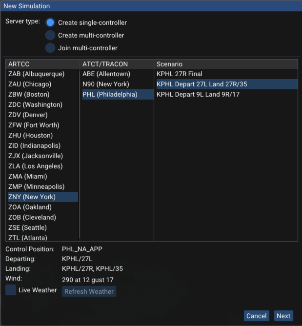
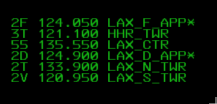
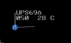
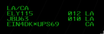
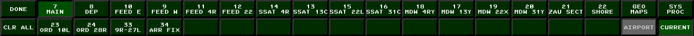
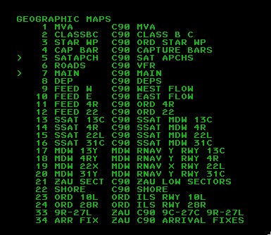

Getting Started
The radar client interface that vice provides is based on STARS.
For familiarity to VATSIM controllers, vice generally follows the keyboard command scheme implemented
in CRC's STARS implementation; see
the discussion of vice's STARS
emulation below for more information.
The first time you launch vice, a window is shown for configuring the simulation.
(After the first time, the window can be brought up by clicking the "replay" button in the menubar: .)
A number of scenarios are available, some departure-only and
some including both departures and arrivals.
Here is an example:

After selecting an ARTCC, the available TRACONs and ATCT/TRACONs in that ARTCC are shown.
Selecting one of those gives a number of scenarios to choose from. Here the ZNY ARTCC has
been selected and then the PHL ATCT/TRACON. After choosing a scenario and clicking the "Next"
button, a window with further settings is shown:
In the second configuration window, you can set the airport departure rate (ADR)
for all of the airports that may have departures in the scenario as well as the airport arrival rate (AAR) for all of the
arrival airports.
(The PHL scenario only includes the Philadelphia Airport, though many other scenarios include multiple airports.)
Both of these rates are specified in terms of aircraft per hour, so an ADR of 30 corresponds to one aircraft departing
every two minutes (on average).
If you'd like an arrival-only scenario, for example, just set all of the departure rates to zero.
The "Sequencing challenge" slider controls how challenging the departure sequence is—the higher it is, the more likely it is
that successive departures will be to the same gate or to the same fix.
For arrivals, the "Go around probability" slider allows setting the probability that each arrival goes around.
You may also select "Include random arrival pushes", which will periodically bump up the rate of
arrivals to increase the challenge of vectoring aircraft.
"Push frequency" sets how often arrival pushes happen and "Length of push" sets how long they last
before traffic returns to regular levels.
After you have configured the simulation, click "Ok" and you will have a STARS scope and flight strip window to work with.
Use the usual STARS commands as appropriate (to initiate track, accept handoffs, handoff to other controllers, etc.),
and the additional ATC commands below to issue control commands to aircraft.
When the simulation starts, vice also displays a small
window listing the active departures, arrivals, approaches and overflights, and airspace awareness rules.
For this PHL scenario, four arrivals, two approaches, and three departures are active.
Other scenarios may be more complex.
The approach codes—here, "27R" and "35"— are used in vice's aircraft control commands like "expect approach"
and "cleared approach".
To free up space, you can close this window by clicking on the "X" in the upper right corner.
Clicking on the button in the menubar will show
the window again.
To adjust the amount of space used for flight strips, right click the line separating the flight strips from the
radar window and drag left or right with your mouse.
You can also remove flight strips entirely by opening the settings window, in the menubar, and disabling "Show flight strips" under the "Flight strips" header.
A number of buttons are available in the menu bar at the top of the window:
- / : pause or resume the simulation.
- : opens the window to select a new scenario and set its parameters.
- : open a window that allows changing various settings. The most useful one is the simulation rate: you can speed up time during slow times or to increase the challenge.
- : show the
window that lists the currently active departures,
arrivals, and approaches.
- : opens a window that
shows a summary
of vice's ATC commands
and frequently-used STARS commands.
- : open a window with controls for launching aircraft, either automatically or manually.
- : open this webpage to review vice's documentation.
- : display information about the version of vice you have installed.
- : join the vice Discord.
- : Toggle full-screen mode.
When you exit vice, it remembers everything going on—all of the aircraft in flight, the instructions they have been given, etc.
The next time you launch vice, it loads all of that back in and you can continue where you left off.
If you'd like to start something new, just click and configure a new simulation.
When vice is paused, you can hover the mouse above a radar track to see information about the instructions the aircraft has been given so far—for example, altitude and speed assignments, whether it has been sent direct to a fix, the approach it has been assigned, etc. An example is shown below. This information is especially useful when resuming a vice session after you have been away from it for a while.
If you are signed in to Discord, vice can
automatically update your activity status there with
information about your current vice session (the number
of arrivals and departures, the position you're controlling,
etc.) When you first launch vice you are given the
option to disable this feature if you would like. The
settings window, available by clicking in the menubar, can also be used to enable or
disable this feature afterward.
Drawing Routes
vice can draw the active departures, approaches, and
arrivals for the current simulation. This can be helpful when
studying those for an airport, since they are drawn directly on
the radar scope with annotations that give the fixes, any
altitude or speed restrictions, and procedure turns.
To toggle whether a route is drawn on the scope, click the checkbox on the left
next to it in the information window that is shown at
the start or after clicking on the
button in the menubar.
For example, here is how the HVN RNAV Runway 2 approach is rendered:
We can see the procedure turn at PEPER and that it is both
the IAF and the IF; altitude restrictions at both SALLT and
PEPER, that SALLT is the FAF, and that arrivals from KEYED will not fly the procedure
turn.
Launching Aircraft
When a new simulation starts, vice automatically launches new departures and arrivals based on the
departure and arrival rates set in the "New Simulation" window.
During a simulation, clicking on the departing plane icon in the menubar
opens a window that allows more control over aircraft launches.
(Note that when vice is used with multiple controllers in the same simulation, only one controller
may have this window open at a time.)
The rates for automatic launches can be adjusted in this window. Alternatively, aircraft can be launched manually. If manual launches are selected,
the window shows all of the available departure runways and exits as
well as all of the arrivals, as shown below. Clicking the aircraft icon for a departure or arrival
causes the aircraft shown to be launched. If you'd like a different aircraft for the
next launch (for example, to have a heavy aircraft), click the redo icon until you're happy with the selection.
The window also shows the elapsed time since the launch of each type as well as how many
miles in trail (MIT) there would be if the next aircraft was launched.
To delete all of the aircraft from the simulation and restart, click the trash icon:
.
Multiple Controllers
With vice you can also have multiple controllers working aircraft together.
Select "Create multi-controller" in the "New Simulation" window and
you can select an ARTCC, ATCT/TRACON, and scenario in the same way
that you do with a single controller.
For multi-controller scenarios, there are some additional settings, shown beneath
the list of scenarios:
Each multi-controller simulation has a name associated with it;
vice chooses a random one by default (above, it's "choice-length").
You're welcome to choose a different name if you prefer.
These names can be used so that you can tell other people which
simulation to choose in order to join you.
You may also enable "Require password" and enter a password for the
simulation so that only people you allow can join it.
Selecting "Join multi-controller" shows a list of the simulations
that are currently available, including how many controllers
are signed into each one.
Note that the simulation names are shown in the first column.
After selecting one, you can choose one of the available control
positions and join.
vice also allows you to join a simulation as an observer,
in which case you have no control capabilities.
ATC Commands
A variety of instructions can be issued to aircraft by an aircraft controller.
To issue an instruction, first press the semicolon key, ;.
This will place the STARS radar into "target generation" mode and the characters "TG"
will appear above the text input area (which is by default on the left side of the STARS
window, towards the top.
The commands below can then be entered to issue control commands to aircraft.
As you enter commands, they will be shown in the STARS input area.
You can correct errors with the backspace key or press the [ESCAPE] key
to exit target generation mode.
To indicate which aircraft should be given a command, you
can either enter a command and click on an aircraft's radar
track in the STARS window or you can enter the aircraft's callsign followed by a space
before the command, and then press the "enter" key. The aircraft's callsign may
be abbreviated if unambiguously identifies a single aircraft.
The callsign of the last aircraft you issued to a command to is shown after "TG" when
target generation mode is activated.
If you'd like to give another instruction to that aircraft, you can skip entering its callsign.
Entering another aircraft's callsign causes the command to be issued to that aircraft instead.
After you issue a command, the virtual pilot's readback is
shown in the readback window below the STARS window.
After receiving an instruction, the aircraft will start
following that instruction, to the best of its abilities.
Unlike VATSIM, the pilots will always do exactly what you
tell them to.
If you'd like to issue multiple commands to an aircraft at once,
enter the commands one after another with a space between them.
To open a window that shows the available ATC commands when using vice,
click the button in the top menubar.
| Command |
Function |
Example |
Hheading |
Directs the aircraft to fly the specified heading. It will turn in whichever direction gets it to that heading most quickly.
If no heading is given, the aircraft is instructed to fly present heading. |
H050, H |
Lheading |
Directs the aircraft to turn left to the specified heading. |
L130 |
Rheading |
Directs the aircraft to turn right to the specified heading. |
R210 |
TdegreesL |
Directs the aircraft to turn the specified number of degrees to the left. |
T10L |
TdegreesR |
Directs the aircraft to turn the specified number of degrees to the right. |
T20R |
Dfix |
Directs the aircraft to proceed direct to the given
fix. (The specified fix must be in the aircraft's
flight plan, including on the approach assigned to it.) |
DWAVEY |
Dfix/Hheading |
Directs the aircraft to depart the specified fix at the given heading.
(The specified fix must be in the aircraft's flight plan.) |
DLENDY/H180 |
Cfix/Aaltitude/Sspeed |
Directs the aircraft to cross the specified fix at the given altitude and speed.
Either one or both of A
and S may be specified.
Altitudes may be given as single altitudes (corresponding to
"at"), an altitude and a plus sign ("at or above"),
an altitude and a minus sign ("at or below"), or a
range of altitudes separated by a minus sign ("between"). |
CCAMRN/A110+ |
Calt |
Directs the aircraft to climb to the specified
altitude, which is given in hundreds of feet.
If the aircraft is changing speed, both the speed
change and climb are simultaneous.
|
C170 |
TCalt |
Directs the aircraft to climb to the specified
altitude, given in hundreds of feet, after it
finishes speeding up or slowing down to meet a
controller-specified speed.
|
TC170 |
Dalt |
Directs the aircraft to descend to the specified
altitude, given in hundreds of feet. |
D20 |
TDalt |
Directs the aircraft to descend to the specified
altitude, given in hundreds of feet, after it
finishes speeding up or slowing down to meet a
controller-specified speed.
|
TD20 |
ED |
Directs the aircraft to expedite the descent to its
assigned altitude. |
ED |
EC |
Directs the aircraft to expedite the climb to its
assigned altitude. |
EC |
Sknots |
Gives the aircraft a speed restriction.
If the restriction is given after an aircraft is cleared for an approach,
the speed restriction is in effect until 5 mile
final. If no speed is given, then the aircraft is instructed
"cancel speed restrictions". Speed changes happen at
the same time as any required altitude change. |
S210, S |
TSknots |
Gives the aircraft a speed restriction to be
applied after the aircraft climbs or descends to the
most recent controller-specified altitude.
As with S, speed restrictions are
canceled at 5 mile final. |
TS210 |
SMIN |
Directs the aircraft to maintain its slowest practical speed. |
SMIN |
SMAX |
Directs the aircraft to maintain its maximum forward speed. |
SMAX |
SS |
Directs the aircraft to say its indicated airspeed. |
SS |
SH |
Directs the aircraft to say its current heading. |
SH |
SA |
Directs the aircraft to say its current altitude. |
SA |
SQcode |
Instructs the aircraft to squawk the given beacon code. |
SQ1200 |
Eapproach |
Tells the aircraft to expect the specified
approach. This command must be used before an aircraft
is cleared for an approach and it also adds the approach
fixes to the end of the aircraft's route. |
EI2L |
Capproach |
Clears the aircraft for the specified
approach. The aircraft must have been told to expect the approach before it is cleared for it. |
CI2L |
Afix/Capproach |
Clears the aircraft for the specified approach when
it passes the given fix. |
AROSLY/CI2L |
CAC |
Cancels approach clearance for an aircraft. |
CAC |
CSIapproach |
Clears the aircraft "straight in" for the specified approach.
(This command is only useful for approaches that include procedure turns.)
The aircraft must have been told to expect the approach before it is cleared for it. |
CSII6 |
I |
Directs the aircraft to intercept the localizer (at
which point it will follow the localizer's lateral path
but not descend until it is cleared for the approach.) |
I |
CVS |
Directs a departure to "climb via the SID". |
CVS |
DVS |
Directs an arrival to "descend via the STAR". |
DVS |
TO |
Directs an arrival to contact the tower. |
TO |
ID |
Instructs the aircraft to "ident". |
ID |
X |
Deletes the specified aircraft from the simulation. This command is useful when one starts going down the tubes. |
X |
P |
Toggles Pause/Unpause |
P |
Key Concepts
Aircraft are shown on the STARS scope as radar tracks;
a datablock next to them shows the aircraft's callsign
and additional information about it. A leader line
connects the radar track to the datablock. Here is an example:
Here we see the datablock showing the aircraft's callsign, LXJ137, its altitude in hundreds of feet (040) multiplexing with its destination airport (CDW), and its groundspeed in tens of knots (28) multiplexing with its aircraft type, CL30. The "H" after groundspeed is the aircraft's consolidated wake turbulence (CWT) category—upper small. (See the section on datablocks for extensive documentation of datablocks and the information that they may show.)
The blue circle shows the aircraft's current position and the purple circles show its course over the past 25 seconds; we can see that it is flying to the Northeast. Finally, the "P" in the middle of the circle (the position symbol) indicates which controller has owner of the aircraft's track.
A single controller may own an aircraft's track and a single controller may own control of an aircraft. The same controller may own both or two different controllers may the track and control. A controller must have control of an aircraft in order to issue instructions to the pilot. See the discussion of Track Ownership below for more information about how control and track ownership are transferred between controllers.
Each controller in the terminal environment is responsible for at least one terminal control position (TCP).
(A single controller may cover multiple positions when multiple positions have been consolidated.)
Each TCP is identified by three characters:
- The first character gives the facility; more or less the TRACON or ATCT/TRACON where the position is located.
- Facilities are split into multiple areas; the second character which area the TCP is in.
- Finally, each area is split into sectors; these are denoted by the third character.
Consider for example the N4P TCP: the N indicates the
N90 (New York) TRACON; the 4 is for the fourth area (which is the Newark area)
of N90; finally, the P is the Yardley sector of the Newark area.
Other controllers, both real and virtual, may be signed in when you're running a vice scenario.
The list of controllers is available in the "Controllers" drop-down in the scenario information window.
Among other useful information, it shows the TCP identifier associated with each controller
and whether the controller is human.

Entering Commands
Some STARS commands are entirely keyboard based: you enter a
command and hit the [ENTER] key to issue the command.
As you type, your input will be shown in the input area,
which is by default on the left side of the screen.
Entering a space starts a new line.
To edit your input, the backspace key can be used.
Alternatively, pressing [ESCAPE] clears the input and
any errors that are displayed.
Many STARS commands involve selecting an aircraft that they
apply to; in
STARS this is called "slewing" the aircraft. To slew an
aircraft in vice, click on its radar track with the
left mouse button. You will often enter a command with the
keyboard and then slew an aircraft; if the documentation
below, [SLEW] indicates that an aircraft should
be slewed to execute the command.
Many STARS keyboard commands take additional parameters such as a number
or the name of an airport. These will be shown in parenthesis with the number
and type of character expected. Thus (#)
indicates that a single digit should be entered, without any parenthesis.
Similarly, (ABC) indicates that three letters are expected.
For commands that take runways, (RWY) will be used.
Runways are specified with their number and then, if required, "L", "C", or "R"
to distinguish between parallel runways. Runways numbered 9 or less should not have a leading zero.
(AIRPORT) denotes an airport given to a command; airports should be specified using
three letters, dropping the leading "K".
Many keyboard commands take an aircraft identifier, which will be denoted (ACID) in the following.
The aircraft identifier may be given as either the aircraft's complete callsign, e.g., "UAL650", or as the aircraft's beacon code.
Some commands also take a tab list identifier, which is a number from 0–99 that is associated with
aircraft that are displayed in system lists like coordination lists.
It is also common for commands to take identify a controller using the controller's ID (e.g., the TCP for a terminal position).
In the following documentation, (CID) indicates such a controller id.
There are a number of rules that define how these are specified; they are
discussed in more detail below.
The STARS keyboard has a number of custom keys that are not present on standard keyboards.
In the following documentation, when one of the STARS keys in square brackets below is shown, the corresponding
regular keyboard key should be entered.
| STARS |
Regular |
[BRITE] | [Ctrl-F3] |
[CA] | [F11] |
[CHARSIZE] | [Ctrl-F5] |
[CNTR] | [Ctrl-F1] |
[DCB-SHIFT] | [Ctrl-F7] |
[DCB] | [Ctrl-F8] |
[F13] | [Shift-F1] |
[FLT DATA] | [F6] |
[HND OFF] | [F5] |
[INIT CNTL] | [F3] |
[LDR] | [Ctrl-F4] |
[MAPS] | [Ctrl-F2] |
[MIN] | [End] or \ |
[MULTIFUNC] | [F7] |
[PREF SET] | [Insert] |
[RANGE] | [Ctrl-F10] |
[RNGRING] | [Ctrl-F9] |
[SITE] | [Ctrl-F11] |
[TGT GEN] | ; |
[TERM CNTL] | [F4] |
[TRIANGLE] / | ` |
[VP] | [F9] |
[WX] | [F8] |
When issuing a command leads to an error, STARS prints an
abbreviated message above the input area. These are the error
codes that vice currently uses:
| Code |
Description |
| FORMAT |
Error in the format of the command; for example,
specifying a non-numeric value where a number was expected.
|
| DUP BCN |
Duplicate beacon code: the same squawk code has
been assigned to multiple aircraft. |
| DUP CMD |
Duplicate command: a command has been entered a second time and is no longer applicable. |
| ILL ACID |
Illegal aircraft id. |
| ILL ATIS |
Illegal ATIS code. |
| ILL AIRPORT |
Illegal airport: either the airport does not exist
or the command does not apply to it. |
| ILL CODE |
Illegal beacon code: an illegal squawk code was entered. |
| ILL FIX |
Illegal fix: the fix specified does not exist. |
| ILL FLIGHT |
Illegal flight: no flight plan is filed for the specified callsign. |
| ILL FNCT |
Illegal function: the command cannot be executed. |
| ILL LINE |
Illegal Tab line index entered: no aircraft is associated with that number. |
| ILL MAP |
Illegal map: an invalid map was specified to be
displayed or hidden. |
| ILL PARAM |
Illegal parameter: the command specified had an
invalid parameter. |
| ILL POS |
Illegal position: the control position specified
is invalid or does not exist. |
| ILL PREFSET |
Illegal preference set: the preference set specified
is invalid or does not exist. |
| ILL RPC |
Illegal runway pair configuration specified for CRDA. |
| ILL RWY |
Illegal runway. |
| ILL SCR |
Illegal scratchpad: the scratchpad specified for
an aircraft does not meet the requirements of a valid scratchpad. |
| ILL SECTOR |
Illegal sector: the controller specified is
invalid. |
| ILL TRK |
Illegal track: another controller owns the
aircraft's track, so the command is disallowed. |
| ILL VALUE |
Illegal value: the value specified is
illegal (e.g., an impossible altitude). |
| MULTIPLE FLIGHT |
Multiple flights apply. |
| NO FLIGHT |
No flight: there is no aircraft with the specified callsign. |
| RANGE LIMIT |
Invalid weather range specified. |
Specifying Controllers
A number of STARS commands take controller IDs to specify other controllers; examples include handoffs and
point outs. The following rules apply to them:
- For pairs controllers in the same facility, the full TCP may be entered,
or the facility may be omitted and only the area
and sector given. Thus, for a handoff from Yardley,
N4P, to
LaGuardia departure, N1L, the Yardley controller could specify 1L
for LaGaurdia departure.
- If the other controller is in the same area of the same facility, then only the sector needs to be entered: for example,
N4P
can hand off to N4A, the Newark North arrival position, just by specifying A for
the TCP.
- For TCPs outside of the facility, the delta () symbol must be specified before the TCP; in
vice delta is mapped to the backtick key. The full three-letter TCP may be given,
though the area and sector may be omitted if the facility only has one TCP.
- To handoff to an enroute controller, the enroute facility identifier and sector must be provided;
enroute sectors are identified by two-digit numbers.
For the home ARTCC, the facility identifier is generally
C,
unless a neighboring ARTCC's facility identifier is "C", in which case
the facility identifier for the home ARTCC changes from a "C" to the regular facility identifier.
Thus, for ZNY, "N" is used rather than "C". The sector may be omitted
if there is only one enroute controller signed on.
- For handoffs, airspace awareness rules may be
provided in the scenario definition; these are rules that associate specific controllers with
departing aircraft based on their altitude, the fix they are flying to, and possibly their aircraft type.
When such a rule applies to an aircraft, a handoff to a corresponding enroute controller can
be initiated simply by entering the enroute facility identifier, without the sector.
For a handoff to a controller in a neighboring facility where an airspace awareness rule applies,
just and the facility id are sufficient.
The airspace awareness definitions in a scenario can be found in the scenario information window,
accessed by clicking in the main menu bar.
The following STARS commands offer further control over how airspace awareness is applied:
| Command |
Function |
[HND OFF]CXE |
Enables airspace awareness for interfacility handoffs.
|
[HND OFF]CXI |
Disables ("inhibits") airspace awareness for interfacility handoffs.
|
[HND OFF]CTE |
Enables airspace awareness for intrafacility handoffs.
|
[HND OFF]CTI |
Disables ("inhibits") airspace awareness for intraacility handoffs.
|
[HND OFF]CE |
Enables airspace awareness for both inter- and intrafacility handoffs.
|
[HND OFF]CI |
Disables airspace awareness for both inter- and intrafacility handoffs.
|
Quick Reference
For basic controlling, a small number of STARS commands are used frequently.
The following table lists them and gives a short description of their operation.
| Command |
Description |
[SLEW] | Whichever of the
following first applies:
|
[INIT CNTL](ACID)[SLEW] | Initiate control of an aircraft that isn't being tracked by any controller. |
(CID)[SLEW] | Offers to handoff the
track of the aircraft to the controller identified by (CID). |
(scratchpad)[SLEW] | Sets
the scratchpad of the aircraft to (scratchpad). |
.[SLEW] | Clears the
aircraft's scratchpad. |
+(###)[SLEW] | Sets the
aircraft's assigned temporary altitude (which is shown in its datablock). |
The DCB
The display control bar (DCB) is a menu that is shown by default at the top of the STARS window.
Many aspects of STARS's behavior can be configured using the DCB.
There are four types of buttons in the DCB:
- Toggle buttons: these enable and disable various features. When enabled, they have a lighter
color than usual and appear depressed (like the "OFF CNTR" and "WX 3", "WX 4", and "WX 5" buttons above.) Clicking them
toggles whether they are enabled.
- Menu buttons: when clicked, they replace the contents of the DCB with those for another
DCB menu. For example, clicking "MAPS" from the main DCB brings up a menu for configuring which
STARS video maps are displayed.
- Spinners: these allow setting various STARS parameters using the mouse wheel. For example, clicking "RANGE" allows setting the radar's range in nautical miles. Spinners capture the mouse and don't allow the cursor to leave their button until the user either clicks the mouse or presses the
[ESCAPE] key. When a spinner is active, it is also possible to enter a new value for it using the keyboard and then pressing [ENTER].
- Disabled buttons: these are shown in dark grey and represent STARS functionality that is not currently available in vice.
DCB submenus generally have buttons that return to the main DCB menu—look for a button labeled "DONE" or "SHIFT". Alternatively, pressing the [ESCAPE] key will return to the main DCB menu.
The main DCB menu offers the following controls:
Here is the auxiliary DCB:
Many of its buttons are disabled; the enabled ones are:
Press the [DCB] key (control-F8) to toggle whether the DCB is visible.
Track Ownership
Controllers must both own an aircraft's track and have control of the aircraft in order to issue
instructions to the aircraft's pilot. Managing ownership of tracks
and control of an aircraft is at the core of how multiple controllers work together to
control an aircraft; it is crucial that controllers hand off both the track and control of an
aircraft before it enters another controller's airspace.
Untracked Aircraft
When an aircraft departs an airport, its track and control are initially not owned by any controller.
VFR aircraft may also enter a controller's airspace without being tracked.
Such aircraft have limited datablock, which only shows the aircraft's altitude in hundreds of feet.
The datablock is drawn in green indicating that the current controller does not own it,
and the asterisk shown in the center of its track (the blue dot) also indicates that its track is
unowned.
Departures will contact the departure controller on the radio;
look for a message in the input window below the STARS scope:
A controller can initiate track of an uncontrolled aircraft track using the following commands:
| Command |
Function |
(ACID)[SLEW] /
[INIT CNTL](ACID)[SLEW] |
Initiates track of the the slewed track, which must have the given aircraft id.
If the aircraft id does not match, the NO FLIGHT error is shown.
|
[INIT CNTL](ACID) |
Initiates track of the aircraft with given aircraft id. (Note: not a real-world STARS command).
|
[CTRL SHIFT][SLEW] |
Initiates track of the slewed aircraft.
|
Alternatively, for departures, you may enable the "Auto track departures" checkbox
in the "Settings" window to automatically initiate track on the departing aircraft that you are
responsible for in the current scenario.
When you own an aircraft's track, the datablock becomes white a full datablock
and the letter corresponding to your position's TCP (here, "W") will appear at the center of the radar track.
Note that you can not issue control instructions to an aircraft unless it is on your radio
frequency. If you track a departure before it contacts you, it
is still under the tower's control and tuned to the tower's
radio frequency. Once the (virtual) tower controller tells the aircraft to "contact
departure", they will check in with a message on your radio frequency. It is at this point
that you also have control of the aircraft and can start
issuing control commands to it.
Inbound Handoffs
Aircraft entering your airspace will be generally owned by another controller (human or virtual) before they
are handed off to you. Initially, they are displayed with a partial datablock
that shows altitude in hundreds of feet, groundspeed in tens of knots, and the
scratchpad, if set.
Often it is a center controller who owns the aircraft and a "C" will be displayed for the position id,
as in the example below:
The controller who owns the aircraft's track may eventually hand it off to you;
at this point, the datablock will turn white, start flashing, and change to a full datablock as shown below.
The datablock will continue flashing until you accept the handoff by slewing the aircraft's
radar track using one of the following commands:
| Command |
Function |
[SLEW] |
Accepts the handoff of the slewed aircraft (if it is being handed off!).
|
[HND OFF] |
Accepts the aircraft being handed off that is closest to the center of the range rings.
|
After a handoff is accepted, the aircraft's datablock will stop flashing and remain white.
However, as with departures, you do not have control of the aircraft until the other controller
instructs the aircraft to contact you, transferring control as well.
After the aircraft contacts you on the radio, you may start issuing control instructions to it.
Outbound Handoffs
When you are ready to hand off an aircraft's track to
another controller, a number of commands are available to do so:
| Command |
Function |
(CID)[SLEW] /
[HND OFF](CID)[SLEW] /
[HND OFF](CID) (ACID) |
Initiates a handoff of the slewed aircraft to the specified controller.
|
[SLEW]/
[HND OFF][SLEW] /
[HND OFF](ACID) |
Cancels an initiated handoff to another controller.
|
(For these commands, determining the correct controller ID to enter has a few
subtleties and is discussed further below.)
The datablocks of outbound handoffs have an identifier for the target controller stuffed into
the second line of the datablock, four characters in. For JBU52 below, it is "V", corresponding
to the intrafacility position "1V" that the aircraft is being handed off to, and for TAM9021,
it is "C", corresponding to a center position. For handoffs outside the facility (including to center),
the position identifier is shown in the datablock multiplexed with the altitude and scratchpad (it is "N86" for TAM9021.)

After the other controller accepts the handoff, control of the aircraft's track is
transferred to them. The aircraft's datablock will start
flashing to notify you of this and the letter on the track will switch to be the
other controller's. After a few seconds the datablock will stop flashing.
Note that at this point you still retain control
of the aircraft and can issue control instructions to it since you haven't yet transferred control to
the other controller.
When you are ready to transfer control of the aircraft to the controller who has
accepted the track, enter the FC command in the command input window and slew the aircraft.
This will instruct the aircraft to switch frequencies to the next controller.
Clicking on the track of an aircraft that has been handed off causes the datablock
color to switch to green; this can be used to remember that you have transferred
communications of an aircraft to the other controller.
Redirecting Handoffs
An incoming handoff can be redirected to another TCP by entering the TCP's ID and slewing the aircraft, just as if
you owned the track and were handing it off. Doing so will add RD to the datablock shown to the handoff initiator
and the redirector, and show the TCP to where the track was redirected to. This also turns the datablock green for the redirector.
Here is a datablock for a redirected handoff as seen by the original handoff initiator; we can see that it has been
handed off to the "X" TCP at the facility.
Redirected handoffs can be canceled using the same commands as are used for canceling regular handoffs.
Terminating Control
In addition to handing off tracks to other controllers; a controller may terminate control, otherwise known as
"radar services terminated, frequency change approved".
The following commands are available:
| Command |
Function |
[TERM CTRL][SLEW] /
[TERM CTRL](ACID) |
Drops the track of the specified aircraft.
|
[TERM CTRL]ALL |
Drops the tracks of all aircraft under the controller's control.
|
Point Outs
Point outs let controllers direct another controller's attention to an aircraft; some facilities may have prearranged
coordination procedures where an aircraft may pass through another controller's aircraft after a point out, or a point out
may be performed before verbally coordinating with another controller. The following commands are available for point outs:
| Command |
Function |
(CID)*[SLEW] |
Points out the slewed aircraft to the specified controller.
|
[SLEW] |
Cancels a point out of an aircraft.
|
UN[SLEW] |
If the aircraft is being pointed out to the controller, rejects the point out.
|
[MULTIFUNC]O[SLEW] /
[MULTIFUNC]O (ACID) |
Prints the point out history—up to the last 20 TCPs to which the aircraft has been pointed out. |
An outbound point out is shown on the originator's scope with "PO" to the right of the aircraft id,
followed by one character identifying the other controller's TCP. (Here, "B", for TCP 1B.)
An inbound point out causes the corresponding aircraft's datablock to switch to a FDB and flash yellow,
with "PO" shown after the aircraft id.
Clicking on a point out acknowledges it. This causes the datablock to stop flashing but leaves the datablock yellow.
A second click reverts to a green datablock, but leaves it as a FDB.
A third click will then change back to a regular green PDB.
On the originator's scope, an accepted point out causes a flashing "PO" to appear to the right of the aircraft id for a few seconds.
An inbound point out can be rejected by entering UN[SLEW]; a flashing "UN" is shown to the right of the datablock
on the originator's scope in this case.
Track Information
Much information is encoded in the radar track symbol of an aircraft and the
datablock displayed next to it. STARS provides many different ways to configure
how this information is presented in an effort to balance providing the necessary
information about aircraft that are important to a controller while minimizing the
visual clutter from aircraft that are less relevant.
Track Symbols
The location of each aircraft visible to RADAR is shown using a primary target symbol.
Which shape is used for the symbol depends on which RADAR mode has been selected and which
RADAR sites are active.
FUSED is the default radar mode, in which case a small blue circle is used for aircraft tracks, as in the examples so far.
In MULTI mode, a small blue rectangle is used in place of the circle and the rectangle is oriented
based on the aircraft's heading; this example is flying in a northeasterly direction:
In SINGLE mode, a blue rectangle is also used, but the size of the rectangle
varies based on how close the track is to the RADAR site and the rectangle is
oriented toward the RADAR site rather than according to the aircraft's heading.
The track is bigger the farther
away it is from the RADAR site, which helps show the degree of uncertainty in its position.
SINGLE mode also includes a green line on the far side of the track with respect
to the RADAR site's position. This track is 50 miles from the RADAR site so has a relatively
large rectangle, and the RADAR site is to the East, so the green line is on the left:
In SINGLE mode, if the aircraft is very far from the RADAR site, only the outline of the blue
rectangle is shown.
The brightness of track symbols is controlled using "PRI" in the DCB BRITE menu.
Track History
STARS can draw a trail of small purple circles behind a track to show its prior path.
The number of circles drawn and the time between adding a new circle to the trail is set
using the HISTORY and H_RATE buttons in the auxiliary DCB:
HISTORY sets the number of history dots; it may range from 0 to 10.
Here is a track with a full complement of 10 history dots:
H_RATE sets the time in seconds before STARS tries to add another history dot.
Note that after this time passes, STARS does not immediately add another dot; rather, it waits
until the next RADAR position is received for the aircraft. Under FUSED RADAR mode, positions
are received every second, and under MULTI and SINGLE modes they are received every 5 seconds.
Thus, for example, under FUSED mode with a H_RATE of 4.5, a new history dot is added every 5 seconds:
STARS waits 4.5 seconds since adding the previous dot, which by definition occurred when a new
RADAR position was received. When the next arrives in 0.5 more seconds, a dot is added, leading
to a 5 second overall rate.
The brightness of track symbols is controlled with "HST" in the DCB BRITE menu.
Position Symbols
All tracks have a single-character position symbol at
their center that indicates which controller owns the track.
Position symbols are determined as follows:
- If the track is owned by a controller in the current controller's facility, the
controller's sector ID is used. (For example, if
N4P is the current
controller's TCP, an aircraft controlled by N1V would be shown with an "V".
- If the track is owned by a terminal controller in an adjacent facility, the facility
id is shown.
- If the track is owned by an enroute controller, either "C" or the enroute facility ID is shown.
The brightness of track symbols is controlled using "POS" in the DCB BRITE menu.
Datablock Types
There are three datablock formats that may be used, depending on circumstances: limited datablocks (LDBs),
partial datablocks (PDBs), and full datablocks (FDBs)s.
Limited Datablocks (LDBs)
Limited datablocks are shown when a target is not tracked by a TCP.
By default, they only display the altitude's altitude in hundreds of feet, though if the track
is slewed, they display the aircraft's assigned squawk code and groundspeed for a short period of time.
A few commands are also available to control the display of squawk (beacon) codes in LDBs:
| Command |
Function |
[MULTIFUNC]B |
Toggle the display of beacon codes in LDBs. |
[MULTIFUNC]B(SLEW) |
Toggle the display of the beacon code for an unassociated aircraft. |
[MULTIFUNC]BE(SLEW) |
Enable the display of the beacon code for an unassociated aircraft. |
[MULTIFUNC]BI(SLEW) |
Disable the display of the beacon code for an unassociated aircraft. |
The brightness of LDBs is controlled using LDB in the DCB BRITE menu.
Partial Datablock (PDBs)
Partial Datablocks are associated datablocks that are owned by another controller.
They show the aircraft's altitude and groundspeed (in tens of knots), followed by a letter indicating
its consolidated wake turbulence (CWT) category; see below for more information about CWT.
The altitude may alternate with the aircraft's scratchpad or destination airport, as in the example below:
Some STARS facilities use variations on the above PDB format: they may also include the secondary
scratchpad, time-share the aircraft type with the groundspeed and CWT category, not include the groundspeed,
or show the groundspeed and CWT category separately.
Slewing a PDB converts it to a full datablock; a second slew returns it to a PDB.
The brightness of PDBs is also controlled using LDB in the DCB BRITE menu.
Full Datablock (FDBs)
Full datablocks provide the most information about aircraft; at minimum, they show the aircraft identifier
(i.e., its callsign), its altitude in hundreds of feet, its groundspeed in tens of knots, a letter denoting
its CWT category, and the aircraft type. Groundspeed and CWT category alternate with the aircraft type, as shown here:
Various other information may be present in a FDB. Here we see the primary scratchpad "L30" and the secondary
scratchpad "DEP" alternating with the altitude, where a "+" after "DEP" indicates that the secondary scratchpad
is shown. We also see a temporary, controller-assigned altitude of 12,000 feet indicated by "A120" in the third line.
The brightness of FDBs is also controlled using FDB in the DCB BRITE menu.
The FDB is displayed for a track if any of the following is true:
- The track is owned by the current controller.
- The track is being handed off from another controller to the current controller.
- The track is a redirected handoff where the current controller has either redirected it or had it redirected to them.
- Another controller has pointed out the track to the current controller and the point out hasn't been cleared.
- The user has clicked on a track owned by another controller.
- The track is owned by a controller whose sector id the user has quicklooked.
- The track has been force quicklooked to the current controller by another controller.
- "Quick look all" has been enabled by the controller.
- The aircraft is squawking a special purpose code (e.g., 7700 for an emergency) or if it has an active safety alert (e.g., low altitude).
A command is also available to control whether the FDB is displayed for overflights that are not under the
user's control:
| Command |
Function |
[MULTIFUNC]E |
Toggle the display of the FDB for overflights. |
[MULTIFUNC]EE |
Enable the display of the FDB for overflights. |
[MULTIFUNC]EI |
Disable ("inhibit") the display of the FDB for overflights. |
"Beaconator"
The "beaconator" feature is enabled by holding the F1 key on the keyboard. In full datablocks,
it causes the aircraft id to be replaced with the code the aircraft is squawking. Partial datablocks show the sqwawk
code in the first line, and limited datablocks show the squawk code and aircraft id. Here is an example of all
three types of datablock, alternating with the beaconator enabled and disabled.
Datablock Control Commands
| Command |
Function |
[MULTIFUNC]E |
Toggle FDB for overflights
|
Additional Datablock Entries
A number of additional useful pieces of information can be found in datablocks, depending on the circumstances.
Scratchpads
In STARS, scratchpads are used to convey information to controllers—for example, the departure exit gate, or an assigned approach.
Each aircraft has a primary scratchpad and a secondary scratchpad. Either may be set independently.
Scratchpads are three characters by default, but may be four at some facilities.
They may contain letters, numbers, plus signs, periods, delta symbols, forward slashes, and asterisks, though
they may not contain three numbers.
The following commands can be used to manage scratchpads:
| Command |
Function |
(SCR)[SLEW] /
[MULTIFUNC]Y(SCR)[SLEW] /
[MULTIFUNC]Y(ACID) (SCR) |
Sets the primary scratchpad to (SCR) for the selected aircraft.
When the first form of this command is used, (SCR) must not be a controller ID; if it is,
a handoff to the controller will be initiated instead.
|
+(SCR)[SLEW] /
[MULTIFUNC]Y+(SCR)[SLEW] /
[MULTIFUNC]Y+(ACID) (SCR) |
Sets the secondary scratchpad to (SCR) for the selected aircraft.
When the first form of this command is used, (SCR) must not be three digits; if it is, the
aircraft's temporary altitude will be set instead.
|
.[SLEW] /
[MULTIFUNC]Y[SLEW] /
[MULTIFUNC]Y(ACID) |
Clears the selected aircraft's primary scratchpad. |
+[SLEW] /
[MULTIFUNC]Y+[SLEW] /
[MULTIFUNC]Y+(ACID) |
Clears the selected aircraft's secondary scratchpad. |
In PDBs and FDBs, the primary scratchpad multiplexes with the aircraft's altitude.
The secondary scratchpad is only shown in FDBs, where it also multiplexes with the altitude and primary scratchpad, if set;
it also has a plus sign
displayed after it in the datablock. In the example below, the aircraft has "I2L" for its primary scratchpad and "SS"
for its second.
Ident
If a controller has instructed an aircraft to ident, a flashing "ID" will appear in its datablock.
In FDBs, "ID" replaces the CWT category next to the airspeed and the aircraft type is temporarily
no longer displayed. LDBs display the aircraft's squawk code and "ID" for identing aircraft,
and PDBs display "ID" at the end of the second line of the datablock.
Temporary Altitude
In order to help remember the altitudes they have assigned aircraft, controllers may associate a
temporary altitude with each aircraft under their
control. Temporary altitudes given in hundreds of feet and
are shown on the right side of the bottom line of FDBs; here,
we can see that AAL929, currently at 3,700', has been
assigned a temporary altitude of 3,000'.
Two commands are available to manage the temporary altitudes associated with aircraft.
| Command |
Function |
+(###)[SLEW] |
Specifies a temporary altitude for the selected aircraft. |
+000[SLEW] |
Clears the temporary altitude for the selected aircraft. |
Requested Altitude
The requested final cruising altitudes of departing aircraft may
optionally be displayed in FDBs, multiplexed with the airspeed and aircraft type.
The following commands are available to control this:
| Command |
Function |
++(###)[SLEW] |
Sets the of requested altitude (given in hundreds of feet) for the slewed aircraft. |
[MULTIFUNC]RA[SLEW] |
Toggles display of requested altitude for the slewed aircraft. |
[MULTIFUNC]RAE[SLEW] |
Enables the display of requested altitude for the slewed aircraft. |
[MULTIFUNC]RAI[SLEW] |
Disables the display of requested altitude for the slewed aircraft. |
[MULTIFUNC]RA |
Toggles display of requested altitude for all aircraft that have not had requested altitude display specifically enabled or inhibited. |
[MULTIFUNC]RAE |
Enables the display of requested altitude for all aircraft that have not had requested altitude display inhibited. |
[MULTIFUNC]RAI |
Disables the display of requested altitude for all aircraft that have not had requested altitude display enabled. |
Consolidated Wake Turbulence (CWT)
Each type of aircraft has been assigned
a Consolidated
Wake Turbulence (CWT) category by the FAA. CWT categories range from "A" to "I" and go
in decreasing order of aircraft size. Aircraft CWT categories are shown in both PDBs and FDBs.
This table lists the categories and has representative
aircraft types for each one.
| Letter |
Category |
Examples |
| A |
Super |
A380 |
| B |
Upper Heavy |
A33*, A34*, A35*, B744, B77*, B788, B789 |
| C |
Lower Heavy |
A30*, A310, B76*, DC10, MD11 |
| D |
Non-Pairwise Heavy |
B74[1,3,D,R,S], B78X |
| E |
B757 |
B752, B753 |
| F |
Upper Large |
A31*, A32*, B73*, DH8D, E190 |
| G |
Lower Large |
CRJ*, GLF[2,3,4] |
| H |
Upper Small |
BE40, B350, C560, LJ* |
| I |
Lower Small |
BE20, C25[A, B], PA31, SR22 |
Squawk Codes
IFR aircraft have preassigned squawk codes and should already be squawking them,
though a few commands are available to issue new squawk codes to aircraft if needed:
| Command |
Function |
[FLT DATA](ACID) /
[FLT DATA][SLEW] |
Assign an automatically-generated available squawk code to the aircraft.
|
[FLT DATA](ACID) (####) /
[FLT DATA](####)[SLEW] |
Assign squawk the specified squawk code.
|
Note that when using these STARS commands, you will need to
use the SQ command in the aircraft control
window to inform aircraft of their new squawk code.
If an aircraft is not squawking the beacon code assigned to it, the bottom line of the full datablock
shows both the code it is squawking (on the left) and the code it has been assigned (on the right).
The code that it should be squawking flashes to alert the controller.
Special Purpose Codes (SPCs)
If an aircraft squawks a special purpose code (SPC) (e.g., 7600 for a radio failure, 7700 for an
emergency, etc.), the corresponding two-letter code is shown in red at the top of the FDB and an alert sounds.
The alert can be silenced by slewing the aircraft.
Here is an example for an aircraft squawking 7700.
The controller may also associate an SPC with an aircraft regardless of what it is squawking by entering a
SPC and slewing the aircraft. An alert sound is not played in this case. The following codes may be used:
| Command |
Function |
LL[SLEW] |
Associates the "lost link" SPC with the selected aircraft. |
HJ[SLEW] |
Associates the "hijack" SPC with the selected aircraft. |
RF[SLEW] |
Associates the "radio failure" SPC with the selected aircraft. |
EM[SLEW] |
Associates the "emergency" SPC with the selected aircraft. |
MI[SLEW] |
Associates the "military intercept" SPC with the selected aircraft. |
Leader Lines and Positioning Datablocks
Leader lines connect radar tracks to the datablocks of the associated aircraft.
They may have eight orientations, corresponding to the eight cardinal and ordinal directions.
Here is an example of a radar track with a leader line East of the aircraft (left) and
Northwest of it (right):
The DCB offers two buttons for configuring leader lines:
The top button, LDR DIR, is a spinner that controls the default direction of leader lines for
aircraft whose tracks that are owned by the current controller.
The bottom button, LDR, controls the length of all leader lines. The leader line length can
range from 0 to 7, with the range of lengths shown below:
A number of keyboard commands are available to specify leader lines, including ways to specify
them for subsets of the aircraft. These all use the numbers 1-9 to specify a
leader line direction; depending on the command, 5 may be used to clear a previously-set direction or
it may be invalid.
If you have a numeric keypad on your keyboard, you have an easy reference to
the association between numbers and directions; consider the aircraft to be at the position of
the "5" key and then the other numbers specify the direction of the leader line relative to the
aircraft. If you don't have a numeric keypad, visualize one, or refer to this figure:
A number of commands are available to configure leader lines, where all uses of (#)
below correspond to a number following the above convention for specifying directions:
| Command |
Function |
(#)[SLEW]/
[MULTIFUNC]L(#)[SLEW]/
[MULTIFUNC]L(#) (ACID) |
Sets the leader line direction for the aircraft, where (#) is a valid leader line direction specifier. 5 may be given to clear a previously-assigned direction. |
[MULTIFUNC]L(#)U |
Sets the default leader line direction for aircraft with unassociated tracks. |
[MULTIFUNC]L(#)* |
Sets the default leader line direction for aircraft tracked by other controllers. 5 may be given to clear a previously-assigned direction. |
[MULTIFUNC]L(TCP)(#) |
Sets the leader line for aircraft controlled by the specified TCP. If a one-letter TCP is entered for a controller in the same area, a space should be entered after it. 5 may be entered to clear a previously-assigned direction |
[MULTIFUNC]L(##)[SLEW]/
[MULTIFUNC]L(##) (ACID) |
Sets the default leader line for a single track system-wide, across all controllers' displays. 55 may be entered to clear a previously-specified direction. |
[LDR] |
Activates the LDR spinner in the DCB. |
Quicklook
"Quicklook" makes it possible to specify that all tracks owned by another controller will be shown with a full datablock
instead of a partial datablock. This can be useful when one controller is feeding aircraft to another; quicklook gives
some more visibility into the flow of inbound aircraft. When "quicklook plus" is used, the datablocks of quicklooked aircraft
are also shown in white rather than green.
A number of commands are available to control quicklook:
| Command |
Function |
(CID)/
[MULTIFUNC]Q(CID) |
Toggles quicklook for the specified control position. Multiple positions may be specified, separated by spaces.
If a "+" is included after the control position,
quicklook plus is toggled.
If the user's current TCP is entered, the currently-quicklooked positions are shown in the preview area.
|
ALL/
[MULTIFUNC]QALL |
Enables "quicklook all", where all aircraft are shown as being quicklooked. |
ALL+/
[MULTIFUNC]QALL+ |
Enables quicklook all plus for all aircraft. |
[MULTIFUNC]Q |
Disables all active quicklooks. |
The currently-active quicklook positions can be shown in the SSA list, after "QL:".
Force Quicklook
A controller can also "force quicklook" a track that they own to cause its full datablock to be
shown on another controller's display. Force quicklooked aircraft also have yellow datablocks for the recipient,
until they clear the forced quicklook by slewing the track.
| Command |
Function |
**(CID)[SLEW] |
Force quicklook the slewed track to the identified controller. Multiple controller IDs may be specified,
separated by spaces. "ALL" forces quicklook to all controllers.
|
Dwell Mode
Dwell mode increases the brightness of the track and datablock of the aircraft closest to the mouse cursor,
if the mouse is reasonably close to a radar track. Here is an example of it:
It can be configured using the DWELL button in the auxiliary DCB; it may take the value OFF, ON, or LOCK.
OFF disables DWELL mode and ON enables it, with the increase in brightness lasting as long as the mouse cursor
is close to a track. With LOCK mode, the increased brightness of a track persists, even after the mouse cursor
moves away. Only when another track is approached by the mouse cursor does the brightness increase switch to it.
Dwell mode can also be configured using the keyboard:
| Command |
Function |
[MULTIFUNC]DE |
Enable the ON dwell mode.
|
[MULTIFUNC]DI |
Disable dwell mode.
|
[MULTIFUNC]DL |
Enable the LOCK dwell mode.
|
Altitude Filters
Controllers can set altitude filters to hide the datablocks and leader lines of aircraft outside a range of altitudes
of interest; doing so can help reduce the amount of clutter on the screen.
Here is an example of a track that is outside the filter range:
Note that if an track is pointed out or is an inbound handoff, its full datablock will still be shown, even if it is outside
of the current altitude filter.
STARS supports two filters, one for unassociated tracks and one for associated tracks.
Each of these filters is a range of altitudes, specified in hundreds of feet.
The following commands are available to manage altitude filters:
| Command |
Function |
[MULTIFUNC]F |
Display the current altitude filters in the preview area. The first filter range applies to unassociated
tracks and the second applies to associated tracks.
|
[MULTIFUNC]FC(###)(###) |
Specifies the altitude filter range for associated tracks.
The first three digits give the bottom altitude of the filter range and the second three digits
give the top of the filter range. Both altitudes are given in hundreds of feet.
|
[MULTIFUNC]F(###)(###) (###)(###) |
Specifies the altitude filter range for both unassociated and associated tracks.
The first three digits give the bottom of the filter range for unassociated tracks and the next
three give the top of the range for unassociated tracks, both in hundreds of feet.
The following pair of three digit numbers similarly give the filter range for associated tracks.
|
Tools
STARS offers a variety of tools to help with vectoring aircraft and ensuring they
remain separated. For most of the tools in this section, the font size is based on the TOOLS font
size in the CHAR SIZE menu of the DCB and the brightness is based on the TLS setting in the BRITE menu of the DCB.
Flight Plan / Beacon Code Display
| Command |
Function |
[MULTIFUNC]D[SLEW] /
[MULTIFUNC]D(ACID) |
Display flight plan
|
[MULTIFUNC]B[SLEW] |
If the slewed aircraft is associated, display its aircraft id, received, and assigned
beacon code in the preview area.
|
Position Reporting
| Command |
Function |
*[SLEW][CLICK] |
Shows the heading and distance from the clicked point in the STARS window to the selected aircraft.
|
[MULTIFUNC]D*[CLICK] |
Prints the latitude-longitude coordinates of the clicked location in the preview area.
|
Collision Alerts
If there is a loss of separation between aircraft or if STARS predicts an imminent loss of separation, a collision alert will be issued where red text "CA" is shown in the aircraft datablocks and an alert sound will be played. The alert sound continues until one of the aircraft is slewed. Here is an example of a pair of aircraft with CA alerts:
A few commands are available to enable and disable collision alerts:
| Command |
Function |
[CA]K[SLEW]/
[CA]K (ACID) |
Toggles whether CA warnings are enabled for the aircraft. |
[CA][SLEW]/
[CA]P (ACID) |
Toggles whether CA warnings are enabled for a pair of aircraft. The slewed aircraft must be in conflict with exactly one other aircraft or must have previously had collision alerts inhibited as part of a pair of aircraft. |
[CA]AI |
Disable CA warnings on all aircraft. |
[CA]AE |
Enable CA warnings, except for aircraft that have had them individually disabled. |
If collision alerts are globally disabled, "TW OFF: CA" will be displayed in the SSA list. If they are disabled for a particular aircraft, a triangle will be shown after the aircraft's callsign in its datablock. Here is a case where disabling CA for two aircraft was not a good idea.

Minimum Safe Altitude Warnings
If aircraft are beneath the minimum vectoring altitude at their location, a minimum safe altitude warning (MSAW) may be issued. Aircraft with MSAWs have "LA" (for "low altitude") displayed in red at the top of their datablocks. An alert sound is played when an MSAW is issued; it can be silenced by slewing the corresponding aircraft. Here is an example of such an aircraft:
MSAWs can be configured with these commands:
| Command |
Function |
[MULTIFUNC]VMI |
Disable MSAW for all aircraft. |
[MULTIFUNC]VME |
Enable MSAW for all aircraft other than those for which it has been individually disabled. |
[MULTIFUNC]V[SLEW] |
Toggle whether MSAW is enabled for the specified aircraft. |
[MULTIFUNC]Q[SLEW] |
Temporarily inhibit MSAW for an aircraft that currently has an MSAW. Once the aircraft is above the MVA at its location, MSAW will be reenabled for it. |
When MSAW is disabled or inhibited, an asterisk is shown after its datablock. (If both MSAW and CA is disabled for an aircraft, a plus sign will be shown after its datablock).
A map showing the minimum vectoring altitudes used for MSAWs is included in the "SYS PROC" maps available from the "MAPS" menu in the DCB.
Predicted Track Lines
PTLs (Predicted Track Lines) show the aircraft's predicted course over the course of 0.5 to 3 minutes
into the future. Here is an example of a track with a PTL:
PTLs can be controlled using these buttons in the auxiliary DCB menu, which is shown by
selecting SHIFT from the main DCB.
PTL OWN sets whether PTLs are shown for tracks that are owned by the TCP,
and PTL ALL sets whether PTLs are shown all associated tracks in the current
altitude filters. It is also possible to
display or hide the PTL of a single aircraft using a keyboard command:
| Command |
Function |
[MULTIFUNC]R[SLEW] |
Enable/disable the PTL for a radar track. An error is issued if the aircraft
is already displaying a PTL due to PTL OWN or PTL ALL being enabled. |
Range Bearing Lines
Range bearing lines (RBLs) track the distance and heading between aircraft and/or fixes.
For example, the image below shows an RBL between two aircraft, indicating that N63A is 6.50nm
miles along a 118 heading from AAL86. In this case, the RBL was drawn from AAL86 to N63A; if it
had been drawn the other way, the label would be next to AAL86 and the heading would be 118+180=298.
The "-1" at the end of the label indicates that this is RBL number 1. If additional RBLs were created, they would
be given successive numbers to identify them.
RBLs may be created between pairs of aircraft, and aircraft and a fixed location, or a pair of fixed locations.
When aircraft are involved, the corresponding RBL endpoint moves along with the aircraft.
The following commands are available to create and delete RBLs:
| Command |
Function |
*T[SLEW][SLEW] |
Create an RBL between the two slewed aircraft. |
*T[SLEW](FIX) or *T(FIX)[SLEW] |
Create an RBL between the slewed aircraft and the fix FIX. |
*T[SLEW](#) |
Delete the RBL with given number. |
*T |
Delete all RBLs. |
Minimum Separation
The predicted minimum separation between two aircraft can be shown. Below we
see that based on their current routes the two aircraft are predicted to have
a minimum separation of 2.15nm and that separation will occur when they are at
the two points marked by small triangles.
The following commands are available to create and minimum separation lines.
| Command |
Function |
[MIN][SLEW][SLEW] |
Create an RBL between the two slewed aircraft. |
[MIN] |
Create an RBL between the slewed aircraft and the fix FIX. |
TPA/ATPA
The terminal proximity alert (TPA) and automated TPA (ATPA) tools provide graphical representations that aid
in ensuring that there is sufficient separation between aircraft. A TPA cone can be associated with an aircraft
to show a given distance in nautical miles in front of it; see the left image below for a TPA cone marking 4nm.
A TPA J-ring is a circle around an aircraft's radar track of specified radius; the right image below shows a J-ring
with a 4nm radius.
The following keyboard commands are also available to configure TPA cones and J-rings:
| Command |
Function |
*J(###)[SLEW] |
Adds a TPA J-ring with radius given by ### to the selected track. |
*J[SLEW] |
Removes TPA J-ring from the selected track. |
**J |
Removes TPA J-rings from all tracks. |
*P(###)[SLEW] |
Adds a TPA cone with length given by ### to the selected track. |
*P[SLEW] |
Removes TPA cone from the selected track. (ATPA cones are unaffected.) |
**P |
Removes TPA cones from all tracks. (ATPA cones are unaffected.) |
*D+ |
Toggles the display of the mileage represented by TPA rings/cones for all tracks. |
*D+[SLEW] |
Toggles the display of the mileage represented by TPA rings/cones for the selected track. |
*D+E |
Enables the display of the mileage represented by TPA rings/cones for all tracks. |
*D+E[SLEW] |
Enables the display of the mileage represented by TPA rings/cones for the selected track. |
*D+I |
Inhibits the display of the mileage represented by TPA rings/cones for all tracks. |
*D+I[SLEW] |
Inhibits the display of the mileage represented by TPA rings/cones for the selected track. |
ATPA automatically generates cones for aircraft in the approach volume for a runway.
(Approach volumes are generally along the glideslope for a runway.) For example, the image below
shows a 5nm cone in front of BAW6895, indicating the required separation for a CWT F-class aircraft (upper large) behind an upper-heavy
B-class aircraft.
The current in-trail distance, 4.55nm, is shown in BAW6895's datablock, and both that distance and the cone are red, indicating
an ATPA alert for loss of separation.
This table shows the minimum in-trail distances required by ATPA for aircraft on approaches; NOWGT is used
if the weight class of an aircraft is unknown:
|
Trailing CWT Class |
| A |
B |
C |
D |
E |
F |
G |
H |
I |
NOWGT |
| Leading CWT Class |
A |
- | 4.5 | 6 | 6 | 7 | 7 | 7 | 7 | 8 | 10 |
| B |
- | 3 | 4 | 4 | 5 | 5 | 5 | 5 | 6 | 10 |
| C |
- | - | - | - | 3.5 | 3.5 | 3.5 | 5 | 6 | 10 |
| D |
- | 3 | 4 | 4 | 5 | 5 | 5 | 6 | 6 | 10 |
| E/F |
- | - | - | - | - | - | - | - | 4 | 10 |
| G/H/I |
- | - | - | - | - | - | - | - | - | 10 |
| NOWGT |
10 | 10 | 10 | 10 | 10 | 10 | 10 | 10 | 10 | 10 |
ATPA alerts are issued if a loss of separation is expected in the next 24 seconds, and ATPA warnings (which
are drawn in yellow) are issued if a loss of separation is expected in the next 24-45 seconds.
TPA and ATPA can be configured by selecting "SHIFT" from the main DCB menu and then "TPA/ATPA".
The following options are provided:
The first four buttons toggle a particular TPA/ATPA option and display "ENABLED" if the corresponding option is enabled, and "INHIBTD" if it is inhibited. "DONE" returns to the previous DCB menu.
- A/TPA MILEAGE: whether the respective radius or length are shown with TPA J-rings or TPA/APTA cones.
- INTRAIL DIST: determines whether the in-trail distance to the next aircraft is shown in the datablocks for arrivals in an ATPA volume.
- ALERT CONES: determines whether ATPA warning and alert cones are automatically created when insufficient separation is predicted. If disabled but monitor cones are enabled, monitor cones will be shown.
- MONITOR CONES: determines whether monitor cones may be automatically created for all arrivals in an ATPA volume.
The following keyboard commands are also available to configure ATPA:
| Command |
Function |
*AE |
Enables the display of ATPA warning/alert cones for all tracks. |
*AE[SLEW] |
Enables the display of ATPA warning/alert cones for the selected track. |
*AI |
Inhibits the display of ATPA warning/alert cones for all tracks. |
*AI[SLEW] |
Inhibits the display of ATPA warning/alert cones for the selected track. |
*BE |
Enables the display of ATPA monitor cones for all tracks. |
*BE[SLEW] |
Enables the display of ATPA monitor cones for the selected track. |
*BI |
Inhibits the display of ATPA monitor cones for all tracks. |
*BI[SLEW] |
Inhibits the display of ATPA monitor cones for the selected track. |
*DE |
Enables the display of ATPA in-trail distance all tracks. |
*DE[SLEW] |
Enables the display of ATPA in-trail distance the selected track. |
*DI |
Inhibits the display of ATPA in-trail distance for all tracks. |
*DI[SLEW] |
Inhibits the display of ATPA in-trail distance for the selected track. |
For facility engineers, the ATPA approach volumes are
listed in the "PROCESSING AREAS" map list, which can be selected
via "SYS PROC" from the DCB "MAPS" menu. Individual maps can be displayed and then
hidden by entering [MAPS](###) where ### is the map number associated with the volume.
Compass
To help with determining headings when vectoring aircraft, a compass rose may be displayed
around the edges of the STARS radar scope:
The brightness of the compass rose is controlled by CMP in the BRITE DCB menu and
the size of the font used is set based on TOOLS in the CHAR SIZE DCB menu.
Range Rings
Range rings are concentric circles drawn around a selected point with successive steps between
their radii that are 2, 5, 10, or 20nm. With 5nm steps, the default, here are the 5 and 10nm range rings drawn around KEWR:
A few buttons on the main DCB make it possible to
configure range rings. Clicking on RR activates a spinner that allows selecting the step between radii.
If PLACE RR is clicked, then the next location clicked on the radar scope will become the range rings' center point.
Finally, clicking RR CNTR causes the range rings to be centered on the point at the center of the radar scope;
If the range rings are not currently centered, RR CNTR is drawn depressed.
The radius of the range rings can also be set by entering [RANGE] and then 2, 5, 10, or 20, and then pressing enter.
The brightness of range rings can be controlled with the "RR" spinner in the "BRITE" menu of the main DCB.
If the brightness is set to 0, range rings are not drawn.
CRDA
The Converging Runways Display Aid (CRDA) helps ensure separation between aircraft approaching
intersecting runways. It does so by drawing
"ghost" aircraft on one course that correspond to aircraft on another course. The idea is perhaps
best understood with an example:
Here four aircraft are approaching KPHL, AAL45 and JZA868 landing runway 27R and JIA1524 and FFT5099 landing runway 17.
With CRDA enabled, ghosts of the aircraft landing 27R are drawn on the runway 17 approach course at the same distance out
as they are from the point where the two runways intersect.
If we compare the separation of AAL45's ghost with FFT5099, we can see that there will be adequate
separation between the two aircraft—FFT5099 will be well past where the runways intersect before AAL45 lands.
It's a little tighter with JZA868 and JIA1524, though CRDA might give us the hint to slow down JZA868 to increase distance between them.
Ghost aircraft may be positioned via either "stagger" or "tie" mode. With stagger mode, the ghosts
are the same difference from a common point (e.g., the intersection of two runways); the controller's
goal is then to ensure adequate separation between ghost and actual aircraft radar tracks.
Alternatively, with tie mode, ghosts are offset so that the controller's goal is to have actual
aircraft radar tracks coincide with the ghost tracks in order to achieve separation.
When CRDA is available at an airport, the CRDA status list may be displayed on the STARS scope.
Entering [MULTIFUNC]TN toggles whether it is shown, and [MULTIFUNC]TN[SLEW]
repositions it on the screen. In the example below, we can see from the "S" in the line two below "CRDA STATUS"
that CRDA is enabled in stagger mode for
runways 27R/17 at KPHL for the current controller, who has ID 6F.
Ghost radar tracks are normally only generated for aircraft within a pre-defined volume of space around an
approach course and only if their heading is within a specified range of the approach heading.
However, a number of commands below allow forcing a ghost track even if these criteria
are not met.
A variety of commands are available to configure CRDA. Some take an airport's identifier, which
should be given without the initial "K": i.e., "PHL" for Philadelphia, not "KPHL":
| Command |
Function |
[MULTIFUNC]N |
Toggles whether CRDA is enabled. |
[MULTIFUNC]NP(AIRPORT) (#)/
[MULTIFUNC]NP(#) |
Toggles whether ghost tracks are enabled for the CRDA runway pair at the specified airport.
The number is an index into the list of CRDA runway pairs for the airport in the CRDA system list.
If no airport is specified, the controller's default airport is used. |
[MULTIFUNC]NP(AIRPORT) (#)S/
[MULTIFUNC]NP(#)S |
Toggles stagger mode for the CRDA runway pair at the specified airport.
The number is an index into the list of CRDA runway pairs for the airport in the CRDA system list.
If no airport is specified, the controller's default airport is used. |
[MULTIFUNC]NP(AIRPORT) (#)T/
[MULTIFUNC]NP(#)T |
Toggles tie mode for the given CRDA runway pair at the specified airport.
The number is an index into the list of CRDA runway pairs for the airport in the CRDA system list.
If no airport is specified, the controller's default airport is used. |
[MULTIFUNC]NP(AIRPORT) (#)D/
[MULTIFUNC]NP(#)D |
Disables CRDA for the given runway pair at the specified airport.
The number is an index into the list of CRDA runway pairs for the airport in the CRDA system list.
If no airport is specified, the controller's default airport is used. |
[MULTIFUNC]NL(AIRPORT) (RWY)(#)/
[MULTIFUNC]NL(RWY)(#) |
Set the leader line direction for ghost aircraft at the specified airport and given runway
according to the given number. Clears the assigned leader line direction if '5' is given.
The airport may be omitted if the runway uniquely identifies the corresponding airport.
|
[MULTIFUNC]N*ALL |
Force ghost tracks for all aircraft. (Aircraft still must be within the lateral boundary of
their runway's approach region for a ghost to be displayed, however.) |
[MULTIFUNC]N[SLEW] |
If a ghost track was slewed, suppress display of that ghost.
If a primary track was slewed, enable regular display of its ghost. |
[MULTIFUNC]N*[SLEW] |
If a ghost track as slewed, display the aircraft's flight plan in the preview area.
If a primary track was slewed, toggle whether display of its ghost is forced (i.e., always
displayed regardless of heading, altitude, etc., so long as it is within the lateral
boundary of its runway's approach region.) |
[MULTIFUNC]N(AIRPORT) (RWY) / [MULTIFUNC]N(RWY) |
Toggles whether ghosts are generated for the specified runway.
The airport may be omitted if the runway uniquely identifies the corresponding airport.
|
[MULTIFUNC]N(AIRPORT) (RWY)E / [MULTIFUNC]N(RWY)E |
Enable ghosts for the specified runway.
The airport may be omitted if the runway uniquely identifies the corresponding airport.
|
[MULTIFUNC]N(AIRPORT) (RWY)I / [MULTIFUNC]N(RWY)I |
Inhibit ghosts for the specified runway.
The airport may be omitted if the runway uniquely identifies the corresponding airport.
|
[MULTIFUNC]N(AIRPORT) (RWY) B / [MULTIFUNC]N(RWY) B |
Toggle whether the qualification region for the runway is drawn;
this is the lateral region of space aircraft must be inside for a ghost to be generated.
The airport may be omitted if the runway uniquely identifies the corresponding airport.
|
[MULTIFUNC]N(AIRPORT) (RWY) L / [MULTIFUNC]N(RWY) L |
Toggle whether the course lines for the runway are drawn;
these show the final approach course that CRDA is defined with respect to.
The airport may be omitted if the runway uniquely identifies the corresponding airport.
|
[MULTIFUNC]TN |
Toggles whether the CRDA system list is visible. |
[MULTIFUNC]TN[SLEW] |
Specifies the position of the CRDA system list in the STARS window. |
[MULTIFUNC]TN(##) |
Specifies the number of lines of text in the CRDA list |
Significant Points
There are a number of significant points associated with each TRACON;
these include arrival fixes and exits, airports in the TRACON and other relevant
fixes (e.g., those with predefined holds.)
STARS offers two commands that print the distance and heading from a selected point (e.g. an aircraft)
to a significant point.
| Command |
Function |
*F[SLEW][SLEW] |
Shows the distance and heading from the first slewed point to the significant
point closest to the second slewed point. |
*F[SLEW](FIX) |
Shows the distance and heading from the slewed point to the significant point identified
by (FIX). |
Restriction Areas
Restriction areas are annotations on STARS maps that add additional information,
usually related to temporary conditions (flight restrictions, events, etc.) They
may be circular, polygonal, or have no shape associated with them, and may include
text that provides additional information about them. They are drawn in yellow in the
STARS window and their brightness is controlled via the "Map group B" brightness.
Here is a circular restriction area with 2nm radius centered at the KFRG airport:
Restriction areas may be defined by the controller using commands described below or
may be defined in scenario definition files (see STARS and Video Maps).
If a controller defines a restriction area, it is make available to all other controllers
in the session.
As a convenience, vice also downloads the current FAA TFRs
and automatically generates restriction areas for them.
The currently-available restriction areas can be seen via the restriction area list, which can be displayed and
positioned using these commands:
| Command |
Function |
[MULTIFUNC]TRA |
Toggles whether the restriction area list is visible. |
[MULTIFUNC]TRA[SLEW] |
Places the restriction area list at the slewed location in the STARS window. |
Here is an example of the restriction area list:
Restriction area numbers 1—100 are used for user-defined restriction areas
and 101—200 for system-defined restriction areas.
The following commands can be used to create and delete restriction areas.
(Note that system restriction areas cannot be deleted.) The syntax of the
(RATEXT) and (RALOC) specifiers used for restriction areas is
discussed below.
| Command |
Function |
[F12]G(RATEXT)(RALOC) |
Creates a text-only restriction area at the specified location.
It is optional to enter a space between the G and the text.
|
[F12]C(###)(RATEXT) (RALOC)[ENTER] |
Creates a circular restriction area with given radius in nautical miles at the given location.
The text is centered in the circle. A space may be entered between the radius and the text.
|
[F12]C(###)(RATEXT) (RALOC)[SLEW] |
Creates a circular restriction area with given radius in nautical miles at the given location.
The text is centered at the slewed location. A space may be entered between the radius and the text.
|
[F12]A(RALOC)(RALOC)...(RATEXT)[SLEW] |
Creates an open polygonal restriction area with the given text with the specified vertices.
At least two vertices but no more than ten must be provided.
The text is centered at the final slewed point.
Here, the ellipsis ... indicates that additional (RALOC) locations may
be given, seperated by spaces.
A space may be entered between the A and the first location.
|
[F12]A(RALOC)(RALOC)...(RATEXT)[SLEW] |
Creates an open polygonal restriction area (i.e., the last vertex connects with the first)
with the given text with the specified vertices.
At least three vertices but no more than ten must be provided.
The text is centered at the final slewed point.
Here, the ellipsis ... indicates that multiple successive (RALOC) locations may
be given.
A space may optionally be entered between the P and the first location.
|
[F12](###)DEL |
Deletes the restriction area with the given number. |
In the restriction area commands, (RATEXT) is used to indicate specification of the text
associated with the restriction area. One or two lines of text may be specified; if a second line is
given, it should be separated from the first by a space. Because space is used to separate lines, periods
must be entered for spaces within a line of text. These periods are converted to spaces by vice.
Depending on the context, a third line with additional qualifiers can be entered: + to indicate that its associated shape should be shaded,
or * followed by a number from 1—8 to specify a color for the graphics. Here are the colors
associated with each number:
(RALOC) corresponds to specifying a location.
One way to do so is by clicking a point in the STARS window;
alternatively, the names of a fix, a fix offset by a given distance in a given direction, or a latitude-longitude
coordinate may be provided. If keyboard entry is used, [ENTER] must be pressed after each location.
Here are a few examples of text input:
CCC: specifies that the location of the CCC VOR should be used.CCC/320/2.5: specifies a point 2.5nm miles along the 320 bearing from the CCC VOR.403758N/0734617W: specifies a latitude-longitude coordinate 40.37.58N, 73.46.17W.
In other words, for latitude, the first two digits are degrees, the next two are minutes, and the next two
are seconds, followed by a "N" or an "S". For longitude, three digits are used for degrees (and leading
0s must be used if necessary), then two digits for each of minutes and seconds, followed by "W" or "E".
Latitude and longitude coordinates are separated by a slash /.
Putting all of the above together, the a restriction area above that is a 2nm circle around KFRG might be created
by [F12]C2 REPUBLIC FRG[ENTER][ENTER]. We could instead make a shaded area with two lines of flashing by
entering [F12]C2 REPUBLIC SHADED.AREA + FRG[ENTER][ENTER]. Here is the result:
A number of commands are available to modify existing restriction areas and manage which ones are displayed:
| Command |
Function |
[F12]E(###) |
Displays the restriction area with the given number. |
[F12]I(###) |
Hides the restriction area with the given number. |
[F12](###) |
If the text in the restriction area with the given number is blinking, stops its blinking.
Otherwise, toggles the restriction area's visibility. |
[F12](###)T |
Toggles whether the text associated with the restriction area is visible. |
[F12](###)T / br [F12](###)T |
Toggles whether the text associated with the restriction area is visible.
If it is visible, start the text blinking. |
[F12](###)T(RATEXT) |
Changes the text for the associated restriction area to the specified text. |
[F12](###)*(RALOC) /
[F12](###)*[SLEW] |
Moves the center of the restriction area to the specified location. Note that only user-defined
restriction areas may be moved. |
[F12](###)*(RALOC) /
[F12](###)*[SLEW] |
Moves the center of the restriction area to the specified location and display the text blinking.
Note that only user-defined
restriction areas may be moved. |
Airspace
Note: this feature is not present in real-world STARS.
vice is able to indicate when aircraft are outside of the departure or approach airspace,
if it has information about the airspace boundaries.
(This information is not available at all airports.)
If an aircraft is outside of its assigned airspace, a red "AS" error will be printed at the
top of its datablock, as shown below.
The valid altitudes for the aircraft are shown as well, if there are any valid altitudes
at its current location.
For example, the aircraft below is at 5,000' but should be between 11,000' and 12,000' (or should be at a different location!)
Two commands are available to draw the boundaries and altitude ranges of the departure and approach airspace.
(Note that the placement of the drawn altitude labels is not always ideal.)
| Command |
Function |
DA |
Draw the approach airspace, or stop drawing the approach airspace if it is currently being shown. |
DD |
Draw the departure airspace, or stop drawing the departure airspace if it is currently being shown. |
STARS Configuration
Range and Center
The left side of the main DCB has a few buttons for controlling the range of the STARS scope
and where it is centered:
Clicking on RANGE activates the range spinner, which allows setting the scope range to be between
6 and 256 nautical miles. The center of the scope can be changed by clicking PLACE CNTR and clicking
in the scope. Finally, OFF CNTR is shown as depressed when the scope's center is
different than the default center specified in the scenario configuration. Clicking on it
restores the center to the default.
Alternatively, center of the radar scope can be moved by
clicking the right mouse button and dragging. Zoom in and out
using the mouse wheel; each step increases or decreases the
radius shown by one nautical mile. Holding down the control
key while using the mouse wheel gives three mile steps in the
radius. Zooming and panning the scope in this way can be disabled
with vice's settings window, which is displayed when
the in the menubar is clicked.
Character Size
Clicking the CHAR SIZE button in the main DCB brings up the character size DCB menu, shown here:
The sizes controlled by the buttons are:
Clicking DONE returns to the main DCB.
All types of character sizes may range from 0 to 5, except for DCB, which goes from 0 to 2.
Brightness
Selecting the BRITE button in the main DCB brings up the brightness DCB menu, shown here:
The item brightness that the buttons control are:
- DCB: the DCB itself.
- MPA: maps in group "A" (generally, the primary video maps).
- FDB: full data blocks, the cursor, and preview area.
- POS: position symbols in radar tracks owned by the controller.
- OTH: datablocks and position symbols for tracks owned by other controllers and ghost tracks.
- RR: range rings.
- BCN: beacon targets (not currently used).
- HST: history circles behind track paths.
- WXC: weather contrast; i.e., the stippled patterns.
- BKC: background contrast.
- MPB: maps in group "B" (generally, the secondary maps).
- LST: system lists.
- LDB: limited and partial datablocks and their position symbols.
- TLS: STARS tools.
- CMP: the compass rose at the edges of the STARS display
- PRI: primary target symbols.
- WX: weather.
Some of these brightnesses can be set to 0, in which case "OFF" is shown in the BRITE menu and
the corresponding item isn't drawn at all. Others have a minimum required brightness.
RADAR Sites
The STARS RADAR configuration can be
managed by clicking the SITE button in the main DCB, which also shows the current RADAR mode.
STARS supports three RADAR modes:
- SINGLE: RADAR data from a single RADAR site is used determine aircraft locations.
- MULTI: multiple RADAR sites are used to determine aircraft locations, where (more or less),
the closest site to each aircraft is used.
- FUSED: RADAR data from multiple sites is combined with ADS-B
data from aircraft to determine their locations.
SINGLE mode can be selected by clicking on a radar site in the SITE DCB sub-menu (here, NXX and PHL are available.)
MULTI and FUSED are selected by clicking on the corresponding buttons.
Note that the choice of RADAR mode affects which symbols are used for tracks in STARS.
Furthermore, in SINGLE and MULTI modes, radar tracks are only updated once every 5 seconds. In FUSION mode, they are
updated once per second.
Audio
Audio alerts are played when there is a minimum safe altitude warning for an aircraft,
if an aircraft is squawking a special purpose code (e.g., 7700 for an emergency),
it a SPC has been manually assigned to an aircraft, or if there is a conflict alert between
two aircraft. The "VOL" control in the main DCB can be used to control the volume of these alerts.
A few keyboard commands can be used to control audio:
| Command |
Function |
[MULTIFUNC]ZA |
Briefly plays the audio test sound. |
[MULTIFUNC]ZEE |
Enables audio alerts when an invalid command is entered. |
[MULTIFUNC]ZEI |
Inhibits audio alerts when an invalid command is entered. |
vice also provides optional audio alerts for when there is an inbound handoff to the
current controller and when an outbound handoff is accepted (though real-world STARS does not have
these.) These alerts can be enabled and disabled under the "STARS" section of vice's settings menu.
Preferences
Various details of the current STARS configuration like brightness settings, font sizes, and the layout
of the system lists can be saved in a STARS preference set.
The current preference set stores the preference settings that are currently active, and up to 32
additional named preference sets can be stored.
vice stores separate preferences for each TRACON, which makes it easy to customize STARS's settings
in different ways for different facilities.
Functionality for loading and saving preference sets can be accessed by clicking PREF on the main DCB menu,
which brings up the PREF menu:
Here we can see that there are two saved preference sets, PHLN and FINAL, and that PHLN is active.
Clicking on a saved preference set selects it and loads its settings.
Preferences can be restored to their defaults by clicking on DEFAULT.
Clicking RESTORE restores the preferences to what they were when the PREF button was clicked to bring up the PREF DCB menu.
If a preference set is selected, then SAVE is enabled; clicking on it
saves the current preference settings to the selected preference set.
DELETE deletes the selected preference set.
A new preference set is created when SAVE AS is clicked: the preview area will prompt PREF SET NAME and
the name for the preference set can be entered, followed by the ENTER key.
Preference set names may be up to 7 alphanumeric characters and may not be a number between 1
and 32.
These keyboard commands are available for preference sets:
| Command |
Function |
[MULTIFUNC]K |
Resets the current preferences to the system defaults. |
[PREF SET](##) /
[PREF SET](ABC) |
Selects a preference set by number (1–32) or name. |
Display Elements
In addition to radar tracks and their datablocks, the STARS display contains
various system lists that display useful text information,
video maps of the local control area, and, optionally,
a weather radar showing precipitation. These are all described in this section.
System Lists
The system lists show various types of useful information in the form of text. Their font size can be adjusted using the "LISTS" control in the "CHAR SIZE" DCB menu and their brightness is set with "LST" in the "BRITE" DCB menu.
vice currently doesn't support two STARS system
lists: the VFR List and the Coast/Suspend List; both will be added in the
future when the aircraft simulation supports VFR and lost radar
tracks. Otherwise, all of the system lists other than ones for CRDA and maps are
documented in this section; see the CRDA documentation
above for information about the CRDA system list and Video Maps
for information about the maps system list.
System Status Area List
The System Status Area (SSA) list displays general information about the configuration of the STARS radar scope. Here is an example:
The red triangle indicates that STARS is functioning correctly; in vice it will always be there. The first line of text shows the current zulu time 03:07:27 and the altimeter at the primary airport for the current scenario, PHL. The following line shows the network status (always "OK/OK/NA" in vice) as well as the current radar mode, FUSED. Next is the current range shown from the scope's center, 17nm, and the length of predicted track lines (PTLs), 0.5 minutes. Next are the altitude filters, first for unassociated tracks and then for associated tracks (both in hundreds of feet.) The next few line again shows the altimeter at PHL and contains the altimeters at nearby airports in multi-airport scenarios.
A few lines are only shown when corresponding features are enabled. Here, "QL: 6S" indicates that TCP 6S has been quicklooked and "TW OFF: MSAW" indicates that MSAW has been disabled system-wide. Finally, we can see that CRDA has been enabled for the runway pair 27R/17, with the "S" indicating "stagger" mode.
The SSA list is always visible; a keyboard command is
available to position it:
| Command |
Function |
[MULTIFUNC]S[SLEW] |
Places the upper-left corner of the SSA list at the selected location. |
GI text: general information text... TODO
| Command |
Function |
[MULTIFUNC]S |
Clear ATIS and first line
|
[MULTIFUNC]S* |
Clear ATIS
|
[MULTIFUNC]S(A) |
Set current ATIS where (A) is a letter from A to Z.
|
[MULTIFUNC]S(A)* |
Set current ATIS where (A) is a letter from A to Z and clear the first line of GI text
|
[MULTIFUNC]S(#) |
Clear corresponding line
|
[MULTIFUNC]S(#) (TEXT) |
Set the corresponding line of GI text to (TEXT)
|
[MULTIFUNC]S(A)(TEXT) |
Set the ATIS to (A) and the first line of GI text to (TEXT)
|
Which elements are displayed in the SSA list can be configured by selecting the "SSA FILTER" menu from the main DCB, which brings
up the SSA DCB.
The buttons toggle display of the following elements:
- TIME: current time in zulu
- STATUS: system status; always "OK/OK/NA"
- RADAR: radar mode: FUSED, MULTI, or SINGLE
- SPC: whether to show an alert for any special purpose codes currently being squawked by aircraft (e.g., "RF" for an aircraft squawking 7600 due to a radio failure.)
- RANGE: radar range
- ALT FIL: altitude filters
- AIRPORT: altimeter at nearby airports
- QL: quick looked sectors
- CRDA: active CRDA runway pairs
- WX: available and displayed weather precipitation levels
- ALTSTG: show altimeter at primary airport
- CODES: show selected beacon codes
- PTL: length of predicted track lines
- WX HIST: weather history snapshot currently being displayed
- TW OFF: disabled system features (e.g., CA, MSAW)
Flight Plan List
The flight plan list shows untracked aircraft that have departed an airport that you are responsible for.
Once they are tracked, they are automatically removed from the list. Here is an example:
In addition to the aircraft's callsign (middle column) and assigned beacon code (right column), the
left column shows a tab number that is associated with the
| Command |
Function |
[MULTIFUNC]T |
Toggles whether the the flight plan list is visible. |
[MULTIFUNC]T[SLEW] |
Places the upper left corner of the flight plan list at the slewed point. |
[MULTIFUNC]T(##) |
Sets how the maximum number of lines of text displayed in the flight plan list.
If not currently visible, the flight plan list is made visible if the number of visible lines is set. |
Tower List
The tower list shows arrivals at an airport. Up to three tower lists can be displayed; each show arriving aircraft sorted by their distance to the airport. The assignment of airports to tower lists is done by the facility engineer in the scenario specification and can't be changed while vice is running. Here is an example, showing a few arrivals to PHL:
The following commands can be used to configure the tower lists. For all of them the first number gives the tower list index and must be 1, 2, or 3.
| Command |
Function |
[MULTIFUNC]TP(#) |
Toggles whether the corresponding tower list is shown. |
[MULTIFUNC]TP(#)[SLEW] |
Places the upper left corner of the given tower list at the slewed point. |
[MULTIFUNC]TP(#)(##) |
Sets how the maximum number of lines of text displayed in the specified tower list. The first number corresponds to the tower list index. |
Alert List
The Alert List shows the aircraft that currently have altitudes below the minimum vectoring altitude at their present position (LA) or have collision alerts (CA). Below we see that JZA868 is too low (and is currently at 600 feet altitude) and that separation has been lost between JIA1524 and NKS9096.

The maximum number of lines in the alert list is hard-coded to 50 and it is not possible to hide the alert list.
However, its position in the STARS window can be set using the following command:
| Command |
Function |
[MULTIFUNC]TM[SLEW] |
Sets the position of the alert list on the STARS scope. |
Coordination Lists
Coordination lists are used for tower and departure controllers to coordinate aircraft releases.
When there is a departure ready to be released from an airport the controller is responsible for, it is added
to the coordination list by the tower controller. After the departure controller releases an aircraft,
it will depart within the next few minutes. Here is an example coordination list:
Aircraft that are awaiting release flash, as DPJ7156 is here. Released aircraft are no longer flashing and have
a plus sign after their tab list number (here, 0 and 2 for EJA5253 and LXJ13, respectively.)
The coordination list also includes the aircraft type, the aircraft's assigned squawk code, its exit, and
its requested final altitude.
These keyboard commands are used to manage coordination lists and releases:
| Command |
Function |
[F13] |
If there is a single unreleased aircraft in the controller's coordination lists, release that aircraft. |
[F13](ACID) |
For an unreleased aircraft, release the specified aircraft; if the aircraft has been released, then
remove it from the coordination list. Aircraft may be specified by their callsign, beacon code, or their list number (the first column). |
[F13]P(ID) A* |
Enable automatic releases for the specified coordination list. Note that automatic releases only apply to
new aircraft; aircraft already in the list waiting to be released still must be released manually.
"AUTO" will appear in the header line of the coordination list when automatic releases are enabled.
|
[F13]P(ID) M* |
Disable automatic releases for the specified coordination list. |
[MULTIFUNC]P(ID)[SLEW] |
Specifies the position of the given coordination list in the STARS window. |
[MULTIFUNC]P(ID) (##) |
Specifies the number of lines to display in the given coordination list. |
[F13]T |
Toggles whether empty coordination lists are displayed. |
[F13]TE |
Enables the display of empty coordination lists. |
[F13]TI |
Disables the display of empty coordination lists. |
Coordination list identifiers ((ID) in the above commands) are one to three alphanumeric
characters. They can be found in the scenario information
window, accessed by clicking the button in the menubar.
Here we can see that the "REPUBLIC" coordination list has id "A".
Sign On List
The sign-on list shows the TCP covered by the current controller as well as the time they signed on
(in Zulu time).
It can be configured using these commands:
| Command |
Function |
[MULTIFUNC]TM |
Toggles whether the sign on list is shown. |
[MULTIFUNC]TM[SLEW] |
Sets the position of the sign on list on the STARS scope. |
Video Maps
One or more video maps may be displayed in the STARS window to show items like airports and runways, approaches,
important fixes, and geographical features like bridges. There are default video maps specified for each control position
and controllers may add an remove maps depending on circumstances.
The main DCB includes a MAPS button, which displays the DCB MAPS menu, and six buttons to toggle the display of six
video maps; here are six from a KORD scenario:
The button for map number 5, SATAPCH, is depressed, indicating that the corresponding map (which shows approaches
to sattelite airports) is currently visible. The other maps are not currently displayed. Clicking on map's button
toggles whether it is visible.
Here is the MAPS DCB menu for that same scenario:,/p>

The map labeled MAIN which has number 7, is currently visible, though none of the others are.
Each maps is in one of two map groups—A or B; the brightness of the groups is controlled by MPA and MPB in the
BRITE DCB menu. Unfortunately, STARS doesn't directly show which group a particular map is in.
The other buttons in the MAPS DCB do the following:
- DONE: returns to the main menu.
- CLR ALL: deselects all video maps.
- GEO MAPS: toggles display of the maps system list and shows the available video maps in it.
- SYS PROC: toggles display of the maps system list and shows maps related to STARS system operation (e.g., CRDA regions, ATPA volumes, RADAR site ranges, etc.) in it.
- AIRPORT: (disabled) toggles display of the maps system list and shows maps of nearby airports in it.
- CURRENT: toggles display of the maps system list and shows the currently displayed maps in it.
Here is the maps system list for that same KORD scenario. For each map, we have the map number, the map label (as shown in the DCB),
and a longer name describing the map's contents. Maps that are currently displayed have > symbols next to them.

The following keyboard commands can be used to manage video maps.
| Command |
Function |
[MULTIFUNC]TX |
Toggles whether the maps list is shown. |
[MULTIFUNC]TX(###) |
Sets the number of lines of text in the video maps list. |
[MULTIFUNC]TX[SLEW] |
Sets the position of the maps list on the STARS scope. |
[MAPS](###) |
Toggles display of the video map with the given map number. |
[MAPS](###)E |
Displays the video map with the given map number. |
[MAPS](###)I |
Stops displaying the video map with the given map number. |
[MAPS]A |
Removes all video maps. |
Weather
The current weather radar that shows precipitation can be
displayed on the STARS scope. Here is an example North of KORD
during some summer thunderstorms.
The blue-green areas indicate light precipitation, while the mustard-colored area is moderate to heavy precipitation.
Stippling in the radar also indicates the strength, where a denser stipple is heavier precipitation.
AWI8111 would be well-advised to turn a few degrees to the
right.
The brightness of the weather on the STARS scope can be controlled using the "WX" spinner in the BRITE menu of the DCB
and the brightness of the stipple is controlled using the "WXC" BRITE control.
It is also possible to control which levels of precipitation are shown using the "WX*" buttons in the main DCB.
When precipitation of a given level is available to be displayed, "AVL" is shown in the button and the button has
a blue-grey color. When there is no precipitation at a level, the corresponding button has the regular green color.
With the selection above, the three lowest levels, WX1 and WX2 are not shown, while all of the higher levels
of precipitation are.
If the WX button in the SSA list is enabled, the currently available
WX levels and whether they are displayed is shown in the SSA list. In the example below, there is
precipitation at levels 1–5, though not 6. Levels 3, 4, and 5 are shown in the STARS window:
A few keyboard commands related to weather are available:
| Command |
Function |
[MULTIFUNC]W |
Display weather history: the precipitation shown two weather cycles ago is shown for 5 seconds,
then the precipitation from the previous cycle is shown for 5 seconds. (Weather is updated every 5 minutes,
so this shows the last 10 minutes of weather radar.) While the history is drawn, "IN PROGRESS" is shown
in the preview area. If WX HIST is enabled in the SSA list, then "WX HIST:" and the history index
is shown there. |
[WX]C |
Clear weather display: don't show any levels of weather radar in the STARS window. |
[WX](#) |
If # is between 1 and 6, toggle display of the associated weather radar level. |
[WX](#)E |
If # is between 1 and 6, enable display of the associated weather radar level. |
[WX](#)I |
If # is between 1 and 6, disable (inhibit) display of the associated weather radar level. |
Facility Enginerring FAQ
| Question |
Answer |
| How do I get started? |
To get started creating a facility configuration file for vice, read through the
documentation provided below. It will contain all
of the information that will need to be specified in the facility configuration file. You can also
refer to the
vice GitHub page for
pre-exisiting scenarios
|
| How do I test my edits? |
In vice, you can test your edits with the command line. On Windows, open up a command prompt
and set the directory to the folder
with the vice executable. Then, run
vice.exe -scenario path_to_scenario_file -videomap path_to_videomap_file. On MacOs,
it's a very simillar command. Chnage the directory of the terminal to where Vice.app is located. Then,
run ./Vice.app/Contents/MacOs/vice
-scenario path_to_scenario_file -videomap path_to_videomap_file
|
| How can I submit one of my scenarios? |
To submit one of your files, you can:
- Make a pull request or file an issue in the vice
GitHub Page
- Join the vice Discord and send the file to
one of the vice developers or facility engineers
|
| It says "center" is unknown even though it's in the documentation |
Make sure that "center" is in "stars_config" or inside of a scenario. |
| How can I get the lat/long coordinates of a point on a map |
Using ctrl + shift + click will copy the coordinates of where you clicked into your
clipboard! |
Specifying Locations
Throughout the vice configuration files, it's often necessary to specify various locations on the Earth.
vice has a built-in database of all of the airports, VORs, NDBs, and fixes in the United States (courtesy of the FAA),
which allows using these directly for specifying locations. The locations of runway thresholds are available via the syntax
KJFK-22L where the airport name and runway specifier are separated by a hyphen.
Locations can also be specified via
latitude-longitude positions, given as strings. For convenience, multiple latitude-longitude formats are supported.
| Encoding |
Description |
Example |
| Name of VOR/NDB/fix |
A string giving the name of an airport, VOR, NDB, or fix in the United States. |
"JFK" |
| Decimal value pair |
A pair of decimal numbers where the first specifies the longitude and the second specifies the latitude. |
"40.6328888,-73.771385" |
| Degrees, minutes, seconds |
A pair of values with position specified in degrees, minutes, and seconds, separated by periods.
"N" and "S" are used to distinguish North and South latitudes and similarly for "E" and "W" with longitudes. |
"N40.37.58.400,W073.46.17.000" |
| ISO6790 Annex H |
A more compact degrees/minutes/seconds representation; see the Wikipedia page for details. |
"+403758.400-0734617.000" |
(In all three examples above, the location specified is the same—the JFK VOR.)
In vice, if you hold down the control and shift keys and click on a point on the video map, the corresponding
latitude-longitude position is copied to the clipboard—this can be very useful when developing new scenarios!
Routes
When an aircraft's route is given, vice allows airways to be used to describe the route,
which simplifies the route specification when an aircraft is in fact flying along an airway.
Airways are given as part of the route; for example "WHITE V1 DPK" has the aircraft join V1
departing WHITE and follow V1 until DPK. (The alternative, "WHITE DIXIE MOVFA JFK DPK", is
more typing and more error-prone to enter.)
vice uses a custom syntax for specifying the routes of aircraft that allows giving
additional information that is used in the simulation.
In addition to the lateral positions along the route, it is possibly to specify speed and altitude restrictions, handoff points,
and headings to fly.
Here is an example route from a JFK departure. The first two waypoints along the departure runway are automatically
provided by vice so the route starts with the specified fixes in the departure procedure.
The "/h223" after "RNGRR" specifies that the aircraft should fly a 223 heading as departing RNGRR.
It will maintain that heading until it
is further vectored by the controller. If there are further fixes after such a heading, the aircraft may be sent direct to one of
those fixes by the controller.
"SKORR METSS RNGRR/h223"
A number of items such as headings can be specified along with a fix:
-
/arestriction: cross the fix with the specified altitude restriction (with altitudes specified in 100s of feet).
The following options are available for specifying altitude restrictions:
- low
-high: cross at an altitude between low and high.
- alt
-: cross at or below alt.
- alt
+: cross at or above alt.
- alt: cross at alt.
-
/deleteheading: the aircraft will be deleted when it reaches the fix
-
/hheading: depart the fix at specified heading
-
/sspeed: cross the fix at the given speed
-
/ho: the aircraft should be handed off from the virtual controller to the user when it departs the fix
-
/poTCP id: when the aircraft passes the waypoint
and if it is under the control of a virtual controller,
issue a point out to the controller identified by the given TCP id (i.e., the
controller ID that would be used when doing a point out in STARS.)
-
/iaf: indicates that the fix is an IAF (initial approach fix)
-
/if: indicates that the fix is the IF (intermediate fix)
-
/faf: indicates that the fix is the FAF (final approach fix)
-
/flyover: indicates that the fix is
a flyover fix (as opposed to the
default, fly-by). Aircraft must pass directly over flyover
fixes before turning to the next fix, while they may turn
early with fly-by fixes.
If the aircraft should follow an arc leaving a
fix, /arc can be given after the fix.
It can be used in two ways:
- Both a radius in nautical miles as well as the fix at the
center of the arc's circle can be specified. For
example,
HANAV/arc16OMN specifies a 16nm radius
arc centered at OMN.
- Alternatively, just the length of the arc may be given.
For example,
WUPMA/arc7.5 ALABE has aircraft fly along the 7.5nm long arc between WUPMA and ALABE.
For both uses, the direction of the arc is
automatically determined based on the position of the following fix.
For approach fixes that have procedure turns, a number of additional items can be specified:
/hilpt: there is a hold in lieu of procedure turn (i.e., a racetrack procedure turn) associated with the fix.
The default is right turns and a 1 minute limit for ILS approaches and a 4 nm limit for RNAV approaches.
Different limits can be specified directly; for example /hilpt6nm gives a procedure turn with a 6 nm limit and
/hilpt2min specifies a 2 minute limit. For left turns, add a l after the slash, like
/lhilpt./pt45: specifies that there is a standard 45 degree procedure turn at the fix. (This has the same defaults—
right turns, 1 minute (ILS) / 4 nm (RNAV)—as HILPTs. Alternative values are specified the same way.)/ptaaltitude: if the aircraft should descend during the procedure turn, this can be used to specify
the final altitude it should have at the end of the turn. (The altitude should be given in 100s of feet.)/nopt180: specifies that aircraft approaching the fix in the 180 degree semicircle of directions aligned
with the final approach course should not perform the procedure turn. (As an example, see the KJAX RNAV Z 8 approach; this applies for aircraft between heading 346 and 166
arriving at UDAQI.)/nopt: when specified at a fix prior to one with a procedure turn, indicates that aircraft that
pass that fix should not fly the procedure turn.
Airlines and Aircraft
Departures, arrivals, and overflights all need to know about which airlines fly their routes and which aircraft they use for them.
Airlines are specified via objects with the following members:
for the database of possible airlines.
In that file, each airline may have one or more aircraft fleets specified, in its "fleets" member.
| Element |
Type |
Description |
| "icao" |
String |
The ICAO code of the airline (which must be present in vice's openscope-airlines.json file.) |
| "fleet" |
String |
(Optional) If specified, gives the fleet of the airline's aircraft
that are used for this overflight. |
| "types" |
Array of strings |
(Optional) If specified, gives one or more aircraft types to use.
It is not allowed to specify both "fleet" and "types". |
If neither "fleet" nor "types" is specified, vice randomly chooses an aircraft type from the "default" fleet, but if
a particular fleet's aircraft is a better match to a route, you may want to use it or to specify aircraft
types directly.
For example, AAL's "long" fleet would be a good choice for trans-Atlantic flights.
For reference, the available types of aircraft and their performance characteristics are available in the
openscope-aircraft.json
file.
As is probably obvious, both of these databases are by way of openScope,
which kindly made them available under the MIT license.
Scenario Groups
vice offers users a variety of ATC scenarios, where a scenario consists of one or more airports being controlled,
a control position (departure, approach, etc.), and airport configurations—the runways that are active at each
airport. Scenarios are organized in scenario groups, which generally collect multiple control scenarios at a single
airport.
Each scenario group is specified by its own JSON file; see the resources/scenarios/ directory in the
vice source code distribution for examples.
These are the elements of a scenario group:
| Element |
Type |
Description |
| "airports" |
Object |
Defines all of the airports that are included in the scenarios. See the airports section for details. |
| "airspace" |
Object |
Defines the extent of controllers' airspace; see airspace for details. |
| "inbound_flows" |
Object |
Defines the routes for arrivals and overflights;
see Arrivals and Overflights. |
| "control_positions" |
Object |
Information about all of the controllers that are used
in the scenarios in the group. Each member specifies a
controller with the corresponding callsign. For each
controller, the following members should be specified:
- "eram_facility": (Optional) indicates whether the controller is using an ERAM scope (i.e., is a center controller).
- "facility_id": (Optional) a single character giving the controller's facility. This should only be specified for controllers outside of the TRACON.
- "full_name": the name of the control position, used in radio readbacks (e.g., "Philadelphia approach")
- "frequency": the controller's radio frequency, expressed as an integer (e.g., 125325 for 125.325)
- "scope_char": (Optional) a string giving a single character to for the STARS position symbol for tracks owned by this position (e.g., "C"). If unset, the position symbol is generated automatically based on the sector id (for local positions) and the facility_id (for external facilities).
- "sector_id": the controller's sector id, as used for handoffs, etc. (e.g., "N56")
One additional member may be required.
- "default_airport": when CRDA is used, each
controller must have a default airport for CRDA
commands. vice tries to use the controller's
callsign to determine this airport (e.g., LGA_V_APP has LGA as a default).
If the start of the callsign does not identify a valid airport
then the default must be specified explicitly.
|
| "default_scenario" |
String |
A default to use for the initial scenario when the scenario group is chosen.
Must match one of the members in "scenarios". |
| "fixes" |
Object |
Each member associates a name with a latitude-longitude location. These names can be used when specifying
routes for departures and arrivals. (Note that they cannot be used when specifying other locations in the scenario group configuration.)
For example, this associates a useful name with the point
at the end of runway 22R at JFK: "_JFK_22R":
"N040.39.00.362,W073.45.49.053".
Fixes may be specified in relation to
previously-specified fixes (or standard fixes from the
FAA database) using the syntax FIX@HDG/DIST,
where FIX is the name of a fix, HDG is a
heading leaving it, and DIST is a distance along
that heading given in nautical miles.
|
| "magnetic_variation" |
Number |
Number of degrees difference between true North and magnetic North.
Around New York, for example, this value is approximately 13. |
| "name" |
String |
The name for the scenario group. This name cannot be the same as the name for any of the other scenario groups. |
| "primary_airport" |
String |
The main airport for the scenario.
This is used to determine which airport's altimeter and winds to include at the top of the SSA list in the STARS radar scope. |
| "reporting_points" |
Array of strings |
Each entry specifies a fix that aircraft may use at
initial contact when reporting their position ("AAL411, 5
miles Northeast of LENDY..."). |
| "scenarios" |
Object |
This defines all of the ATC scenarios that are available in the scenario group. See the scenarios section for details. |
| "stars_config" |
Object |
Defines settings and configurations related to the STARS radar scope. See STARS and Video Maps for documentation about the items stored in this object. |
| "tracon" |
String |
Name of the ATCT/TRACON that the scenario group is associated with. This is used to show all scenarios for a given ATCT/TRACON together in the UI. |
Airports
The airports in a scenario group are specified via the "airports" member of the scenario group.
Each airports is a separate member, named according to the airport's ICAO code (e.g., "KJFK").
The airport object then has the following member variables:
| Element |
Type |
Description |
| "approaches" |
Object |
Defines all of the approaches to the airport that may be used by aircraft.
See below for documentation about how approaches are specified. |
| "approach_regions" |
Object |
Each member name specifies information about the region of space associated with a runway
when CRDA is used and it is one of the converging
runways. First, the following members specify the lateral extent that
an aircraft must be inside for a ghost aircraft to be generated for it:
- "reference_point": position with respect to which the lateral and vertical extents are defined. (Often, the threshold
of the runway.)
- "reference_heading": heading that is opposite to the runway heading.
- "reference_length": length in nm of the reference line.
- "heading_tolerance": maximum difference between an aircraft's heading and the runway's heading for a ghost aircraft to be displayed.
- "near_distance": distance from the reference point along the reference heading where the lateral volume begins.
- "near_half_width": half of the width of the reference volume at the near distance.
- "region_length": length of the lateral volume along the reference heading, starting from the near distance point.
- "far_half_width": half of the width of the reference volume at the far distance.
These members specify the vertical extent that an aircraft must be inside to have a ghost aircraft:
- "descent_distance": distance from the reference point in nm where aircraft are expected to start its final descent.
- "reference_altitude": altitude of the reference point.
- "descent_altitude": expected aircraft altitude when it's at the descent distance.
- "above_altitude_tolerance": maximum distance in feet an aircraft may be above its expected altitude and still have a ghost be drawn for it.
- "below_altitude_tolerance": maximum distance in feet an aircraft may be below its expected altitude and still have a ghost be drawn for it.
|
| "atpa_volumes" |
Object |
Each member is a string with a runway name and an associated object that specifies the region of space where
the STARS automated terminal proximity alert (ATPA) feature is active for the runway. (If not specified, a default
volume is generated along the runway's extended centerline.) The following members define the region of space:
- "runway_threshold"`: position of the runway threshold or point at which should be used for the start of the volume.
- "heading"`: runway heading or orientation of the volume.
- "max_heading_deviation"`: maximum deviation between an aircraft's heading and the ATPA volume heading allowed for an
aircraft to be included in ATPA.
- "floor"`: bottom altitude of the volume, in feet.
- "ceiling"`: top altitude of the volume, in feet.
- "length"`: length of the volume, from "runway_threshold" in direction "heading", given in nautical miles.
- "left_width"`: width the volume extends to the left of the extended centerline, where "left" is with respect to an
aircraft flying the approach.
- "right_width"`: width the volume extends to the right of the extended centerline.
- "filtered_scratchpads"`: aircraft scratchpads that do not receive ATPA warnings/alerts but that do still
participate in ATPA calculations for other aircraft. (Thus, this should include for example aircraft cleared
for visual approaches that should not themselves receive alerts but where other non-visual aircraft must still
be separated from them.)
- "excluded_scratchpads"`: aircraft scratchpads that do not participate at all in ATPA for this runway.
This should include scratchpads of aircraft arriving on parallel runways, for example.
- "enable_2.5nm"`: a Boolean value that indicates whether reduced 2.5nm separation is allowed on final approach.
- "2.5nm_distance"`: distance from runway threshold at which 2.5nm separation is allowed, if "enamble_2.5nm" is true.
|
| "converging_runways" |
Array of objects |
Each object specifies a pair of converging runways that
will be included in the STARS CRDA list. Each object has
the following members:
- "runways": array of two strings referencing two runways
specified in "approach_regions".
- "leader_directions": array of two strings
specifying the compass direction ("N", "NE", "E",
...) that will be used for leader lines for ghost
aircraft from the two respective runways.
- "tie_symbol": A single-character string giving the
symbol to use on the STARS display for ghost aircraft
when CRDA "tie" mode is used.
- "stagger_symbol": A single-character string giving the
symbol to use on the STARS display for ghost aircraft
when CRDA "stagger" mode is used.
- "tie_offset": number giving an offset in nautical
miles to add to ghost aircraft's distance from the airport when
"tie" mode is used.
|
| "departure_routes" |
Object |
Each member is an object that defines routes for the specified a departure runway.
These routes are followed by aircraft departing that runway, organized by exit fix.
See below for documentation of the per-runway departure route object. |
| "departures" |
Array of objects |
Each object in the array defines a departure to a destination, including one or more airlines that fly that departure,
the type of aircraft flown, and information about the aircraft's path. See below for details
of the departure object. |
| "departure_controller" |
String |
If specified, gives the virtual controller initially controlling the aircraft. |
| "exit_categories" |
Object |
Each member corresponds to a fix used as an exit for departures in the scenario group and allows associating a string category
name with each exit. (These categories are used so that users can control the mix of exits used in a scenario.)
Example: "ARD": "Southwest" |
| "hold_for_release" |
Boolean |
(Optional) If true, departures from the airport must be released by a controller. |
| "name" |
String |
(Optional) The name of the airport. |
| "omit_arrival_scratchpad" |
Boolean |
(Optional) If true, the arrival airport is not shown alternating with the altitude in full datablocks when the scratchpad is unset. |
| "tower_list" |
Number |
Gives the airport's priority for tower list assignments. 1 is the highest priority, then 2, etc.
If "tower_list" is unspecified, the airport has the lowest priority.
The 3 tower lists in the STARS scope are then assigned using this priority, with ties broken by
airport name sorted alphabetically. |
Approaches
The member names in the airport "approaches" object give the abbreviated name of each approach,
as used in vice's ATC commands.
Approaches may be specified using data automatically loaded from the
FAA CIFP or manually.
To use CIFP data, run vice from the command-line and give it the argument -route KXYZ, where
KXYZ is the ICAO code for the airport. vice will print identifiers for the available approaches
and their associated waypoints. For example:
> ..\vice.exe -routes KMIA
[...]
Approaches:
I12 : DHP GLRIA/a3000+/lhilpt1.0min/pta3000/iaf PIANA/a3000+ VEPCO/a2000+
[...]
RY12 : WORPP/iaf GLRIA/a3000/if PIANA/a3000+ VEPCO/a2000+
FOGSO/s210/iaf GLRIA/a3000/if PIANA/a3000+ VEPCO/a2000+
[...]
Approach ids encode the type of approach—for example, I12 is an
ILS approach to runway 27 and RY12 is an RNAV Y runway 12 approach.
Given the id, the approach can be specified with:
| Element |
Type |
Description |
| "cifp_id" |
String |
A string giving the identifier of the approach in the CIFP (e.g., "RZ14"). |
| "tower_controller" |
Optional string |
The name of the tower controller covering the approach. If an airport has a single
tower controller named "(airport)_TWR", then this doesn't need to be specified. |
Support for loading routes from the CIFP is new so please confirm that routes are correct
and report any bugs you find. Note that not all approaches are included in the CIFP.
Alternatively, approaches can be defined manually using the following members:
| Element |
Type |
Description |
| "full_name" |
String |
(Optional) A string giving the full name of the approach (e.g., "RNAV Z Runway 13L").
If not specified and the approach is ILS or RNAV the approach's name is generated automatically using "runway" and "type". |
| "runway" |
String |
A string describing the runway the approach ends at (e.g., "13L"). Note that single-digit runways should not
be specified with a leading 0 (i.e., "1L, not "01L".) |
| "tower_controller" |
String |
(Optional) The name of the tower controller covering the approach. If an airport has a single
tower controller named "(airport)_TWR", then this doesn't need to be specified. |
| "type" |
String |
The type of the approach; it must be "ILS", "RNAV", or "Visual". |
| "waypoints" |
Array of strings |
Each given string specifies an approach route. Multiple strings can be provided for "waypoints" for approaches
with multiple IAFs (e.g. an RNAV "T" configuration).
vice automatically adds a final waypoint at the arrival runway threshold; aircraft are deleted from
the simulation when they reach that point. |
Departures
There are two pieces for specifying departures: their initial route leaving the airport, which depends on the active departure runway,
and their subsequent route out of the TRACON, which does not. These two parts are specified separately.
The "departure_routes" object in the airport definition gives the initial routing for departures,
based both on the runway they are departing as well
as their exit fix. Here is an excerpt from the KJFK departure routes:
"departure_routes": {
"13R": {
"ARD,DIXIE,RBV,WHITE": {
"cleared_altitude": 5000,
"sid": "JFK5",
"waypoints": "KJFK-31L/h185"
},
...
The members of "departure_routes" are strings identifying the departure runway; each departure runway's routes
are then represented by an object with one or more members that specify comma-separated lists of exit fixes.
(Thus, the specification above applies to departures with
exit ARD, DIXIE, RBV, or WHITE, departing runway 13R.)
The exit fix specifiers may include additional text after a
period to allow specifying situation-dependent exits.
For example, we might specify one route
for "RBV.PISTONS", another for "RBV.TURBOPROPS", and a third
for "RBV.JETS". vice treats all of these as going to
the "RBV" exit. When departures are defined in
"departures", they can then refer to the appropriate exit in
their "exit" specifier.
The departure route specification includes the following members:
| Element |
Type |
Description |
| "assigned_altitude" |
Number |
The initial altitude that aircraft climb to. Aircraft given "assigned_altitude"
do not obey any altitude restrictions in the departure route. (This option is mostly useful for hybrid
SIDs that start with radar vectors and later have a pilot nav component; aircraft will not climb beyond
this altitude until the "climb via SID" instruction is given to them.) |
| "cleared_altitude" |
Number |
the initial altitude that aircraft are cleared to. Aircraft given "cleared_altitude"
are implicitly given "climb via SID": they will obey altitude restrictions in the departure route and
climb no higher than the altitude given. |
| "speed_restriction" |
Number |
(Optional) If present, gives a speed restriction in knots which aircraft will maintain until told otherwise by the controller. |
| "description" |
String |
(Optional) A description that is shown in the UI for choosing routes to draw
on the radar scope. |
| "handoff_controller" |
String |
(Optional) A string indicating which controller should receive the handoff if one of the fixes
in the route has the /ho qualifier for a handoff. This is useful if a virtual controller has
initial control, e.g., for a departure from a nearby airport. |
| "sid" |
String |
(Optional) A string naming the SID that the aircraft is flying. |
| "waypoints" |
String |
The initial series of waypoints that the aircraft follows. vice automatically
sets the route's first waypoints to be the specified runway's threshold and then a point 3/4 of the
way down the runway. The waypoints in "waypoints" are then appended to those. Therefore, for the
example above, the aircraft continues to the end of the runway and then flies the heading 185.
|
Either "assigned_altitude" or "cleared_altitude" must be specified.
The other part of specifying departures is the array of objects stored in "departures". Each one describes a departure
to a particular destination. Here is a JFK departure to Paris Charles de Gaulle:
{
"airlines": [
{
"fleet": "long",
"icao": "AFR"
}
],
"destination": "LPFG",
"exit": "HAPIE",
"route": "HAPIE YAHOO WHALE N251A JOOPY NATZ MALOT NATZ GISTI LESLU M142 LND N160 NAKID M25 ANNET UM25 UVSUV UM25 INGOR UM25 LUKIP LUKIP9E",
"scratchpad": "HAP",
},
...
A few additional things must be specified with each departure:
| Element |
Type |
Description |
| "airlines" |
Array of objects |
Each object specifies an airline and the types of aircraft it flies on the route. See Airlines
and Aircraft for the form of the airline objects. |
| "destination" |
String |
The ICAO airport code for the destination. This is only used in flight strips and for the aircraft's datablock on the
radar scope; it does not affect its routing. |
| "exit" |
String |
The exit fix for the departure. In conjunction with the departure runway, this is used to determine the aircraft's
route leaving the airport using "departure_routes". |
| "route" |
String |
The aircraft's route to the destination. This is mostly used so that flight strips have plausible routes, though
vice does its best to have the aircraft follow the given route after it reaches the exit fix. |
| "scratchpad" |
Optional String |
If specified, this gives the aircraft's initial scratchpad. Otherwise, the scratchpad
is set based on the exit, either using the "scratchpads" dictionary in the scenario definition or
via "display_exit_gate" or "display_alternate_exit_gate" in "stars_config". |
| "secondary_scratchpad" |
Optional String |
If specified, this gives the aircraft's initial secondary scratchpad. |
It is optional to specify the final altitude for departures.
| Element |
Type |
Description |
| "altitude" |
Number or array of numbers |
(Optional) The final altitude for the flight. If multiple altitudes are given, one is
chosen at random. If none are chosen, a reasonable final altitude is chosen based on the distance
between the departure and arrival airports and the aircraft's capabilities.
|
Arrivals and Overflights
Note: until recently, overflights were not supported and
arrivals were specified using the "arrival_groups" variable.
"arrival_groups" is still supported to allow transitioning to
"inbound_flows", though it will eventually be removed.
Arrivals and overflights are specified via the "inbound_flows" variable,
which allows specifying the ways that aircraft from adjacent facilities
enter the TRACON. "inbound_flows" has two members, "arrivals" and
"overflights", each of which is an array of arrival and overflight
specifiers, respectively.
vice allows specifying multiple arrival and
overflight procedures together so that it can sequence
them as a group. Thus, if an overflight route corresponds
to a STAR, at least at the beginning, both should be
specified together in the same "inbound_flow". Similarly, if
multiple STARs have the same initial route, they should be
together as well.
Arrivals
Each object stored in the "arrivals" array corresponds to a STAR.
These objects have the following members:
| Element |
Type |
Description |
| "airlines" |
Object |
Destination airports and airlines for the arrivals. These objects include both the members
"icao", "fleet", and "types" members of the airline object documented in Airlines and Aircraft
as well as some additional fields. See the example below. |
| "assigned_altitude" |
Number |
(Optional) If specified, the aircraft will be descending to the given altitude which it will
then maintain until given further directions. If the aircraft should be descending via a STAR that includes
altitude restrictions, leave this unspecified. |
| "cruise_altitude" |
Number |
The aircraft's final cruise altitude. (This is only
used in the aircraft's flight strip.) If
unspecified, vice tries to choose a reasonable
cruise altitude based on the distance and direction of flight. |
| "description" |
String |
(Optional) If provided, this string is shown in
the UI for drawing approaches on
the radar scope to give further information about what
the route is used for. |
| "expect_approach" |
String or Object |
(Optional) This makes it possible to specify an approach that the aircraft has already been
told to expect by a previous controller. (And so, it is not necessary to issue an "expect approach"
command before clearing an aircraft for an approach.). A single string identifying the approach
may be given if the STAR only serves one airport. Otherwise, a dictionary from airport names to approaches
may be provided—for example, "expect_approach": { "KFLL": "I0L", "KOPF": "I12" }.
This setting is especially useful in "finals" scenarios.
|
| "initial_altitude" |
Number |
The aircraft's altitude when first spawned. |
| "initial_controller" |
String |
The callsign of the controller who is initially tracking the aircraft. |
| "initial_speed" |
Number |
The aircraft's initial speed when first spawned. |
| "route" |
String |
(Optional) The aircraft's remaining route. (This is only used for displaying the
aircraft's flight plan, e.g. in flight strips.) |
| "scratchpad" |
String |
(Optional) If provided, the aircraft's scratchpad is set to this value. |
| "secondary_scratchpad" |
String |
(Optional) If provided, the aircraft's secondary scratchpad is set to this value. |
| "speed_restriction" |
Number |
If present, gives a speed restriction in knots |
| "star" |
(Optional) String |
Name of the STAR that the aircraft is flying. |
STARs are sometimes able to deliver aircraft to multiple airports. Therefore, the "airlines" member
is an object with airport names as members. Each of the airports is associated with an array of objects
that specify departure airports, airlines, and (optionally) airline fleets. Here is an excerpt from the
CAMRN4 arrival group at KJFK:
"airlines": {
"KFRG": [
{
"airport": "KDCA",
"icao": "EJA"
},
...
],
"KJFK": [
{
"airport": "MMMY",
"fleet": "long",
"icao": "AMX"
},
...
]
}
We can see that CAMRN4 applies to both the KFRG and KJFK airports, though with different airlines
and different departure airports for the arrivals. The specified departure airports (here, KDCA and MMMY)
are only used so that flight strips and data blocks on the scope are realistic, but the specified airlines
are used to select the type of aircraft from their fleets. As elsewhere, a value for "fleet" may be specified
to limit which types of aircraft may be chosen.
There are two ways to specify a STAR's waypoints: automatically using data loaded from the
FAA CIFP or
manually. To use CIFP data, ensure that the STAR is available by running vice from the command-line
and providing the -routes KXYZ argument, where KXYZ is the name of the
airport. vice will print the available STARS with their transitions. For example,
> ..\vice.exe -routes KLGA
STARs:
APPLE3.SHLBK: SHLBK LOUIE/a13000 BACKY ODESA DQO RUUTH WNDYL BRAND/a8000 KORRY DEPDY TYKES MINKS JERZY RENUE APPLE PROUD/flyover/h45
APPLE3.SWANN: SWANN GATBY KERNO ODESA DQO RUUTH WNDYL BRAND/a8000 KORRY DEPDY TYKES MINKS JERZY RENUE APPLE PROUD/flyover/h45
APPLE3.ALL : RUUTH WNDYL BRAND/a8000 KORRY DEPDY TYKES MINKS JERZY RENUE APPLE PROUD/flyover/h45
[...]
If the STAR specified
in the "star" parameter is present, vice will automatically use the available routes to define the STAR's
transitions and runway-specific waypoints. In that case, one additional parameter must be specified:
| Element |
Type |
Description |
| "spawn" |
String |
The name of the waypoint in the STAR at which new arrivals should start.
A point between two waypoints in the STAR can be specified using an "@" symbol
and a number between 0 and 1 that represents the fraction of distance between
the waypoint and the next. For example, "STW@0.6" specifies that aircraft should
spawn 0.6 of the way between STW and the following waypoint.
Aircraft will then be handed off from the center controller halfway between the
first two waypoints of the route.
|
Alternatively, the waypoints may be specified manually using one required and one optional member.
| Element |
Type |
Description |
| "runway_waypoints" |
Object |
(Optional) This specifies runway-specific waypoints for each airport, if there are any.
After an approach is assigned to an aircraft, the corresponding
runway waypoints are added to its route. Note that the first waypoint in each entry in "runway_waypoints"
must match the last waypoint in "waypoints". (See the example below.) |
| "waypoints" |
String |
The series of waypoints that aircraft should fly. New aircraft are spawned at the first waypoint. These waypoints
should include a "/ho" directive at the point where the aircraft should be handed off from the virtual controller
to the user.
|
The "runway_waypoints" member can be used for STARs that have different routes depending on the arrival
airport and runway.
When the user instructs the aircraft to expect a particular approach then the corresponding waypoints are
added to its route. As an example, the specification of the KPHL JIIMS4 arrival
starts with the following string for "waypoints": "HEKMN N039.27.43.645,W074.56.38.400/ho JIIMS/a8000".
(The second point is used to set the handoff point to be between HEKMN and JIIMS.)
It then has the following "runway_waypoints", corresponding to the runway-specific routes into KPHL, the
only active airport in the scenario.
Note that all start with JIIMS, the same fix at the end of "waypoints".
"runway_waypoints": {
"KPHL": {
"27L": "JIIMS/a8000 ZMRMN CHPMN PSOUT MKORD/h087",
"27R": "JIIMS/a8000 ZMRMN CHPMN PSOUT MKORD/h087",
"17": "JIIMS/a8000 SNEDE/h312",
"35": "JIIMS/a8000 SNEDE/h312",
"9L": "JIIMS/a8000 WUDRR WEVVE ERNYY/h268",
"9R": "JIIMS/a8000 WUDRR WEVVE ERNYY/h268"
}
},
Overflights
An overflight is an aircraft that enters the TRACON already airborne, and flies through it
without landing. Overflights are also specified in "inbound_flows" in the "overflights"
member, which is an array of overflight specifiers. Each specifier may have the following
members.
| Element |
Type |
Description |
| "airlines" |
Array of objects |
Specification of the airlines flying the overflight and their departure/arrival airports. See the
example below. |
| "assigned_altitude" |
Number |
(Optional) If specified, gives a controller-assigned altitude for the aircraft. |
| "assigned_speed" |
Number |
(Optional) If specified, gives a controller-assigned speed for the aircraft. |
| "cruise_altitude" |
Number |
(Optional) The aircraft's final altitude in its flight plan. If unspecified, a reasonable
guess will be made based on direction of flight and the aircraft's departure and arrival airports. |
| "description" |
String |
(Optional) A description of the overflight for use in vice's user interface. |
| "initial_altitude" |
Number or array of numbers |
The altitude aircraft will have when they are spawned at the initial fix.
If multiple altitudes are specified, one is chosen at random.
|
| "initial_controller" |
String |
The identifier of the virtual controller who initially has the aircraft's track. |
| "initial_speed" |
Number |
The speed aircraft will have when they are initially spawned. |
| "scratchpad" |
String |
(Optional) If specified, gives the primary scratchpad aircraft will have. |
| "secondary_scratchpad" |
String |
(Optional) If specified, gives the secondary scratchpad aircraft will have. |
| "speed_restriction" |
Number |
(Optional) If specified, gives a speed restriction to the aircraft (e.g., as would
happen after passing a waypoint on a route with a speed restriction.) |
| "waypoints" |
String |
The route flown by overflights in this flow. Aircraft are spawned at the initial waypoint.
If one of the waypoints on the route includes the "/ho" directive, aircraft are handed
off to the controller at that waypoint. (Otherwise, they are kept by the virtual controller
for their entire overflight; this can be useful for adding "ambient" traffic that the controller
doesn't have to work themselves.) |
Each overflight specification includes one or more "airlines" in an array of objects
that specify the airlines and aircraft that should be included in the overflight.
In addition to the "icao", "fleet", and "types" members documented in Airlines and Aircraft,
the following members may be specified:
| Element |
Type |
Description |
| "departure_airport" |
String |
Airport to show as the aircraft's departure airport. |
| "arrival_airport" |
String |
Airport to show as the aircraft's arrival airport. |
Airspace
Airspace volumes may optionally be specified using the "airspace" object in the scenario group.
These volumes may be assigned to controllers in scenarios, in which case vice will show an
alert when aircraft are outside of the controller's airspace. The airspace object has two members:
| Element |
Type |
Description |
| "boundaries" |
Object |
Defines lateral boundaries of airspace with arrays of location specifiers. |
| "volumes" |
Object |
Defines a volume of space using one or more boundary specifiers and a range of altitudes. |
Each member in "boundaries" names a polyline of one or more line segments. Polylines are specified by arrays of locations.
The first and second points specify the first line, the second and third points specify the second line, and so forth.
Here is an example from the KPHL airspace:
"PHL_DQO27_33": [
"N039.21.58.949,W075.28.55.977",
"N039.25.56.240,W075.29.47.255",
"N039.26.20.204,W075.27.28.196",
"N039.22.24.699,W075.26.48.535",
"N039.21.58.949,W075.28.55.977"
]
Note that the first point and the last point are at the same location and thus, "PHL_DQO27_33" is a closed polygon.
Airspace boundaries do not have to be polygons like this; because boundaries are generally shared between different
volumes of airspace, it's often useful to define boundaries just as polylines and to assemble multiple boundaries
to define the lateral extent of a volume of airspace.
Given the boundaries, "volumes" specifies full 3D volumes of airspace. Airspace volumes have three members; "boundaries"
is an array of strings that names the boundaries that give the airspace's lateral extent, and "lower" and "upper" specify the
altitude range of the airspace. Here is an example from KPHL that uses the boundary defined above:
"PHL_DU_APP27": [
{
"boundaries": [
"PHL_DQO27_33"
],
"lower": 5000,
"upper": 6000
}
Scenarios
Scenarios pull together components from the definitions in scenario groups in order to present specific
control scenarios to the user. The scenarios object's members are the names of the scenarios.
Each of these scenarios may have the following members:
| Element |
Type |
Description |
| "approach_airspace" |
Array of strings |
If airspace has been specified in the scenario group, then these strings give the names
of the airspace volumes that arrivals should remain inside. |
| "arrival_runways" |
Array of objects |
Each object has two values that specify an airport and one of its runways
- "airport": string that gives an airport name
- "runway": string that specifies a runway at the given airport
The specified airport must be present in the "airports" member of the scenario group,
and the specified runway must be one of its runways.
|
| "center" |
String |
(Optional) If specified, this gives the initial radar scope center (as a latitude-longitude position.)
It overrides the "center" value from the scenario group.
|
| "controllers" |
Array of strings |
Callsigns of the other virtual controllers who are online. (These also must be in "control_positions".) |
| "default_maps" |
Array of strings |
The names of the initial video maps that should be displayed when this scenario is selected.
Note that "default_maps" may not be used if "controller_configs" is specified in "stars_maps";
in that case controller-specific default maps can be specified there.
|
| "departure_airspace" |
Array of strings |
Similar to "approach_airspace", if present, this gives the names of airspace volumes that departure aircraft must
remain inside. |
| "departure_runways" |
Array of objects |
Each object specifies information about departures at a runway at an airport in the scenario.
- "airport": string giving the airport's name
- "runway": string specifying one of the airport's runways
- "rate": number giving the number of departures per hour
- "category": an optional string that specifies an exit category. If present, then only departures that have an exit
that is associated with the category will be launched from this runway.
|
| "inbound_rates" |
Object |
Each member specifies an inbound flow group and is an object that is a map
specifying default rates for corresponding flows. Each entry should either be
the name of an airport, in which case it specifies the rate of arrivals to that
airport along arrivals in the flow, or the string "overflights", in which it
gives the rate of overflights.
It can be useful to specify a rate of zero—in this case, the inbound flow
will still be included in the UI shown to the user, which allows the user to enable it.
|
| "multi_controllers" |
Object |
(Optional) If specified, this provides
information about the control positions that are available
for multi-controller scenarios. Each member specifies a
controller split configuration. Each configuration is
then an object where each member specifies a
controller with the corresponding callsign. For each
controller, the following members may be specified:
- "inbound_flows": An optional array of strings
specifying which inbound flows the controller is
covering. (Used to determine where handoffs of inbound
aircraft go.)
- "backup": Specifies another controller in "multi_controllers" that covers
the controller's position if the controller is not
signed in.
- "departures": An optional array of strings that
determines which departing aircraft the controller is
responsible for. Each string can be an airport name
("KJFK"), a slash-separated airport name and runway
("KJFK/22R"), or a slash-separated airport name and
SID ("KJFK/SKORR5"). It is not allowed to mix different
ways of specifying departures at a given airport.
- "primary": Boolean value that indicates that the
controller is the primary controller. Must be given for
exactly one controller. If no other controllers
are signed in, the primary controller covers all
of the other control positions. The simulation
pauses if the primary controller's position is not covered
|
| "range" |
Number |
(Optional) If specified, gives the initial radar scope center range in nautical miles. This overrides the range given in the scenario group. |
| "solo_controller" |
String |
The control position to use for single-user. (This must be present in "control_positions" in the scenario group.) |
| "wind" |
Object |
This specifies the current winds for the scenario. Winds are included in the simulation and affect aircraft similarly to how they do in the real world.
- "direction": the wind's direction, expressed as a number giving the heading
- "speed": the wind speed in knots
- "gust": if present, gives the wind gust speed
|
STARS and Video Maps
A number of settings related to the STARS radar scope are set using the "stars_config" object
in the scenario group. It stores the following values:
| Element |
Type |
Description |
| "allow_long_scratchpad" |
Boolean |
This indicates whether aircraft scratchpads may be four characters long (rather than the default of three).
|
| "airspace_awareness" |
Array of objects |
Each of these objects specify an airspace awareness rule for a TRACON. Each object has the
following memebers.
- "fixes": an array of strings that represent that different fixes an aircraft could be filled
on to apply for this rule. If "ALL" is given,
- "altitude_range": (Optional) an array of two numbers that represent the different cruising altitude that
an airplane has to have to
apply for this rule.
- "receiving_controller": the sector ID of the controller that will be receiving this rule.
- "aircraft_type": (Optional) an array of strings giving allowed aircraft types for the rule: "P" for props, "T" for turboprop/ turboshafts, and "J"
for jets.
|
| "center" |
String |
Default radar scope center (as a latitude-longitude position.) |
| "controller_configs" |
Object |
Each entry specifies controller-specific configuration properties.
The applicable control positions are specified via members given as a comma-separated string of positions
(e.g., "JFK_G_APP,JFK_K_APP"). The following properties may be specified for each one:
- "video_maps": an array of strings specifying which video maps should be displayed
in the DCB for the controller. See "stars_maps" below for further details.
- "default_maps": an array of strings that specifies which maps in "video_maps"
should be initially displayed.
- "center": the initial center of the controller's STARS scope.
If specified, this overrides any center specified in the scenario or scenario group.
- "range": the initial range for the controller's scope in nautical miles.
If specified, this overrides any range specified in the scenario or scenario group.
|
| "coordination_lists" |
Array of objects |
Each entry specifies a coordination list used for releasing departures from one or more airports.
The following properties should be specified for each one:
- "name": a string giving the list name. This is shown at the top of the list when it is visible in the STARS window.
- "id": a string giving the list's identifier. The id must be 1–3 alphanumeric characters and cannot be
the number "1", "2", or "3". It is used to identify the list when entering STARS commands.
- "airports": an array of strings giving the airports managed by the list. Any airport with "hold_for_release"
set to "true" must be in exactly one coordination
list.
- "yellow_entries": (Optional) if true, entries in the list are drawn in yellow rather than green.
|
| "force_ql_self" |
Boolean |
Indicates whether controllers may
enter **[SLEW] to make a track appear yellow
on their own scope. |
| "inhibit_ca_volumes" |
Array of objects |
Each entry specifies a volume of space where collision
alerts are inhibited. It can be useful to specify these
around airports so that alerts aren't issued for aircraft
arriving/departing on parallel runways. Each object has
the following members:
- "name": a string used to identify the volume in
system lists.
- "type": either "circle" or "polygon"
- "floor": number giving the minimum altitude of the volume.
- "ceiling": number giving the maximum altitude of
the volume.
For "circle" volumes, there are two additional members:
- "center": the location of the center of the volume.
- "radius": the radius of the volume, in nautical miles.
For "polygon" volumes, an additional parameter specifies
its extent:
- "vertices": an array of locations specifying the
outline of the volume.
|
| "maps_labels" |
Object |
Allows overriding the labels used for video maps in the
STARS DCB. Each entry is the name of a video map (as would
be specified in "stars_maps") and its value is the label
that should be assigned to it.
|
| "pdb" |
Object |
Allows specifying various adapted configurations for partial datablocks.
The following members are available (all are "false" by default):
- "hide_gs": if true, groundspeed is not shown in the PDB.
- "show_aircraft_type": if true, the aircraft type is shown, time-shared with the groundspeed.
- "show_scratchpad2": if true, the contents of scratchpad 2 are shown, time-shared with altitude
and the first scratchpad.
- "split_gs_and_cwt": if true, groundspeed and the flight rules / CWT category are shown separately,
timesliced, rather than together.
|
| "radar_sites" |
Array of objects (Optional) |
Specification of all of the radar sites.
(If not specified, then STARS Fused mode is the only radar mode available.)
Each object member describes a radar site; the member's name gives the site's identifier.
Each radar site has the following configuration values:
- "char": a single character string identifier for the radar
- "elevation": an integer giving the radar site's
elevation in feet. (Not required if the position is
specified using an airport ICAO code.)
- "position": the radar's lateral position
- "primary_range": an integer giving the range in nautical miles at which the radar can pick up a primary track (typically, 60)
- "secondary_range": an integer giving the range in nautical miles at which the radar can pick up a secondary track (typically, 120)
- "silence_angle": the spread angle in degrees of the radar's "cone of silence"—the volume above it where aircraft cannot be tracked (typically, 30)
- "slope_angle": the angle in degrees with respect to the ground that the base of radar coverage increases as a function of distance from the radar site (typically, 0.175)
|
| "range" |
Number |
Default radar scope center range in nautical miles. If unspecified, a 50 mile range is the default. |
| "restriction_areas" |
Array of objects |
Allows specifying restriction areas that controllers may display in the STARS window.
The following members are available for all types of restriction area (text-only, circular, polygonal):
- "title" (string): gives the restriction area title that is displayed in the "GEO RESTRICTIONS" list.
- "text" (array of two strings, optional): if provided, each string defines a line of text that can
be displayed with the restriction area.
- "blinking_text" (Boolean, optional): if true, the given text will flash when displayed in STARS.
- "hide_id" (Boolean, optional): if true, the numeric restriction area is not displayed before
the text when the restriction area is visible.
- "text_position" (location, optional for circular and polygonal):
the center point of the text, specified using one of the encodings
in Specifying Locations.
For circular restriction areas, two additional parameters must be specified:
- "circle_radius" (number): the radius of the circular region in nautical miles.
- "circle_center" (location): the location of the center of the circle. If "text_position" is not
specified for a circular area, "circle_center" will be used for it.
For polygonal areas, there are three additional parameters:
- "vertices" (string): the locations of the vertices of the polygon. At least two locations must be
given for open regions and three for closed regions.
- "closed" (Boolean, optional): indicates whether the region is closed (i.e., the last vertex is connected
to the first.)
- "shade_region" (Boolean, optional): indicates whether the region's interior should be shaded.
This setting is only available for closed regions.
If "text_position" is not specified for a polygonal region, the center point of all of its vertices is used.
|
| "scratchpads" |
Object |
Each member specifies a scratchpad entry that is assigned when a departing aircraft has a given exit fix. Example: "MERIT": "MER" |
| "scratchpad1" |
Object |
Allows specifying various adapted configurations to
display in place for the first scratchpad in full and
partial datablocks.
The following members are available (all are "false" by default):
- "display_exit_fix": if true, the datablock displays a three-character identifier
for the exit fix where the identifier is found from the "short_name" entry for the
fix in "significant_points".
- "display_exit_fix1": if true, the datablock displays a one-character identifier
for the exit fix where the identifier is found from the "abbreviation" entry for the
fix in "significant_points".
- "display_exit_gate": if true, the datablock displays a single-character identifier
for the exit gate and then two digits giving the requested altitude in thousands of feet.
The exit gate should be listed in "significant_points"; its "abbreviation" value is used
for the identifier. If four-character scratchpads are adapted, three digits giving the
altitude in hundreds of feet are displayed.
- "display_alternate_exit_gate": if true, the datablock displays the requested altitude
followed by a single-character identifier for the exit gate. All other details follow
"display_exit_gate".
|
| "significant_points" |
Object |
Each entry specifies information about a fix that is used in the scenario—for example, as an exit fix or as an airport.
The following values may be specified as the object's members, though all are optional.
- "abbreviation": a single-character abbreviation used to refer to the fix. If unspecified, the first
character of "short_name" is used.
- "description": a brief text description of the fix.
- "location": the latitude-longitude location of the fix. This is normally set automatically based on the fix's name.
- "short_name": A three-letter abbreviation for the fix that is used when it is shown as the scratchpad in datablocks.
If not specified, then if the fix's name has four letters and starts with a "K" (i.e., it's an airport),
the last three letters are used. Otherwise the first three letters of the fix's name are used.
No two fixes may have the same short "short_name".
(May only be specified for fixes with more than three characters in their name.)
|
| "stars_maps" |
Array of strings |
These strings specify the available video maps shown in the STARS DCB;
the first 6 are shown in the main DCB and all are available under the "MAPS" sub-menu.
An empty string, "", may be given to specify an empty map button in the DCB.
No more than 38 maps may be specified.
Run vice.exe -listmaps [path-to-XXX-videomaps.gob.zst] to list the available
maps for an ARTCC.
|
| "video_map_file" |
String |
Filename of the video map file from which the maps specified in "stars_maps" are found (e.g., "videomaps/ZNY-videomaps.gob.zst") |
Video Maps
Video maps are specified separately from the rest of the configuration since they require fairly large files and are not generally edited by hand.
Two utilities are available to generate maps for vice from other formats:
- They can be generated from CRC video maps using the crc2vice utility program, which is available from the
crc2vice releases page. See
its README
file for information about how to use it.
- They can be generated from the FAA's DAT video map file format using dat2vice, which is available from the
dat2vice releases page. See
its README for more information.